1. Javascript
1.1. Application helper module
web/js/app.js
This fie contains useful functions related to the main application, at the end of this file you can see the main code that launch the application to be executed from the browser
1.1.1. Application helper object
saltos.app = {};
This object stores all application functions and data
1.1.2. Modal function
saltos.app.modal = (title, message, extra = {})
This function tries to implement a modal box, the main difference between the tipical alert is that this alert allow to you to specify the title and a more complex message, but it only shows one button to close it.
- @title => title of the modal dialog
- @message => message of the modal dialog
- @extra => object with array of buttons and color
1.1.3. Toast function
saltos.app.toast = (title, message, extra = {})
This function tries to implement a toast notice.
- @title => title of the toast
- @message => message of the toast
- @extra => object with array of buttons and color
1.1.4. Show error helper
saltos.app.show_error = error
This function allow to show a modal dialog with de details of an error
1.1.5. Check response helper
saltos.app.check_response = response
This function is intended to process the response received by ajax requests and returns if an error is detected in the response.
1.1.6. Send request helper
saltos.app.send_request = hash
This function allow to send requests to the server and process the response
1.1.7. Data helper object
saltos.app.__cache = {};
This object allow to the app to store the data of the prefetch feature
1.1.8. Process response helper
saltos.app.prefetch_cache = (responses)
This function process the responses received by the send request
1.1.9. Process response helper
saltos.app.process_response = async response
This function process the responses received by the send request
1.1.10. Get data
saltos.app.get_data = full
This function retrieves the data of the fields in the current layout. to do this it uses the saltos.form.__form.fields that contains the list of all used fields in the layout, this function can retrieve all fields or only the fields that contains differences between the original data and the current data.
- @full => boolean to indicate if you want the entire form or only the differences
1.1.11. Get data parse helper
saltos.app.__get_data_parser_helper = data
This function allow to join in an object the values that share the same prefix part of the key, for example, if you have an object with two ventries (a.a and a.b), then the resulted value will be an object a with two entries (a and b).
- @data => the contents of the object with data
Notes:
This function is used to allow the specification of multiples parameters, for example, in the navbar widget where the widget expects an object for the brand configuration, too is used by get_data to separate in a more pretty structure some fields as the details used in the invoices.
1.1.12. Checkbox ids
saltos.app.checkbox_ids = obj
Retrieve the selected checkboxes contained in an obj, useful for the checkboxes that appear in the bootstrap table widget.
- @obj => the object that contains the checkboxes, generally the table widget
1.1.13. Check form
saltos.app.check_required = ()
This function tries to check if all required fields contain data, if the required field are right, the is-valid class will be applied to all required elements and true is returned, otherwise the is-invalid class will be added to the void required elements and false is returned.
1.1.14. Form disabled
saltos.app.form_disabled = bool
This function disables all elements of the form, it is intended to be used when you need to do screen for view mode.
1.1.15. Ajax helper
saltos.app.ajax = args
This function uses the saltos.core.ajax to implement the ajax feature, and in this scope, tries to simplify the needed configuration by provide a compound of defined features and code, intended to process the responses, the errors, to add the token, the lang.
- @url => url of the ajax call
- @success => callback function for the success action (optional)
- @error => callback function for the error action (optional)
- @abort => callback function for the abort action (optional)
- @data => data used in the body of the request
- @proxy => add the Proxy header with the value passed, intended to be used by the SaltOS PROXY
- @loading => enable or disable the loading feature, true by default
1.1.16. Online message
window.addEventListener('online', event
This function show a message when navigator detects an online/offline change
1.1.17. Offline message
window.addEventListener('offline', event
This function show a message when navigator detects an online/offline change
1.1.18. Main app code
window.addEventListener('load', async event
This is the code that must to be executed to initialize all requirements of this module
1.2. Authentication helper module
web/js/auth.js
This file contains all needed code to do authentications with all features suck as the main authentication using a user and password pair, the checktoken and the deauthtoken to control it.
1.2.1. Authentication helper object
saltos.authenticate = {};
This object stores all authentication functions to get access, check tokens to maintain the access and the deauthtoken to close the access
1.2.2. Authenticate token function
saltos.authenticate.authtoken = async (user, pass)
This function uses the authtoken action to try to authenticate an user with the user/pass credentials passed by argument.
- @user => username used to the authentication process
- @pass => password used to the authentication process
1.2.3. Check token function
saltos.authenticate.checktoken = async ()
This function uses the checktoken action to check the validity of the current token.
1.2.4. De-authenticate token function
saltos.authenticate.deauthtoken = async ()
This function uses the deauthtoken action to try to de-authenticate an user with the token credentials.
1.2.5. Authenticate update function
saltos.authenticate.authupdate = (oldpass, newpass, renewpass)
This function is intended to be used in the profile feature to allow the password change by the user.
- @oldpass => old password used to validate the correctness of the transaction
- @newpass => new password used to update the old password
- @renewpass => repite the new password used to update the old password
1.3. Backup & Autosave helper module
web/js/backup.js
This module provides the needed tools to implement the backup & autosave feature
1.3.1. Form backup helper
saltos.backup = {};
This object stores the needed structure to allocate the forms backups with all their data and the functions needed to do and restore the backups to the main __form object.
Notes:
This object is intended to store more forms that one, usefull when driver uses the same screen to allocate lists and forms that contains fields for the search engine or fields for the create or edit features.
1.3.2. Backup object
saltos.backup.__forms = {};
This object stores the backup data
1.3.3. Save feature
saltos.backup.save = key
This action performs a backup using the specified key
- @key => the key selector that you want to use.
1.3.4. Restore feature
saltos.backup.restore = key
This action performs the restoration action using the specified key, if the key is not found, then empty fields are used for the restoration
- @key => the key selector that you want to use.
1.3.5. Selector helper
saltos.backup.__selector_helper = key
This function allow to search the forms contexts stored in the backup, allow to do queries like two,one or top+one, in each case, the result will be an array with the ids of the found items uwing the selector trick.
All actions that uses this selector, are able to understand some expressions like comma and plus, the follow examples shown how runs the selector in the restore feature:
- @two,one => this example is intended to restore the two context if it is found, otherwise tries to restore the one context, otherwise a void context is set.
- @top+one => this example is intended to restore two contexts in one context, intender to load the context of the search list that can be contained in the top and one containers.
- @key => the key selector that you want to use.
1.3.6. Autosave feature object
saltos.autosave = {};
This object stores all functions used by the autosave feature
Notes:
The autosave feature uses the init, save, restore, clear and purge functions, and workflow of the operation will be start using the init to initialize the key, then the save to store the data of the key context, the restore will be used when a new screen is loaded to load the stored data, the clear will remove the data and the purge will remove the old entries, act as a garbage collector
As an additional feature, this module uses the storage with the timestamp, this usage allow to detect old entries and purge it.
1.3.7. Init
saltos.autosave.init = (key, hash = saltos.hash.get())
This function checks that the key not exists and creates a void entry, used by save to allow the storage of data.
- @key => the key selector that you want to use.
- @hash => optional hash used in the current action.
1.3.8. Save
saltos.autosave.save = (key, hash = saltos.hash.get())
This function save the key context data in the storage, only apply if previously an init is executed.
- @key => the key selector that you want to use.
- @hash => optional hash used in the current action.
1.3.9. Restore
saltos.autosave.restore = (key, hash = saltos.hash.get())
This function restore the key context data of the storage, only apply if data is found and if data contains real data, not a void object
- @key => the key selector that you want to use.
- @hash => optional hash used in the current action.
1.3.10. Clear
saltos.autosave.clear = (key, hash = saltos.hash.get())
This function remove the key context data in the storage, apply in all cases
- @key => the key selector that you want to use.
- @hash => optional hash used in the current action.
1.3.11. Purge
saltos.autosave.purge = (key, hash = saltos.hash.get())
This function purge the void and old data, to do it, checks if data exists and if it is void, in this case the element will be removed.
As an additional feature, uses the saltos.storage.purgeWithTimestamp to maintain clean the localStorage by purging old entries.
- @key => the key selector that you want to use.
- @hash => optional hash used in the current action.
1.4. Bootstrap helper module
web/js/bootstrap.js
This fie contains useful functions related to the bootstrap widgets, allow to create widgets and other plugins suck as plots or rich editors
1.4.1. Bootstrap helper object
saltos.bootstrap = {};
This object stores all bootstrap functions and data
1.4.2. Form fields constructor
saltos.bootstrap.field = field
This function and their helpers, allow the creation of the interface using the bootstrap widgets, the types that can be called are the follow:
- @div => id, class, style
- @container => id, class, style
- @row => id, class, style
- @col => id, class, style
- @text => id, class, PL, value, DS, RO, RQ, AF, AK, datalist, tooltip, label, color, OE, OC
- @hidden => id, class, PL, value, DS, RO, RQ, AF, AK, tooltip, color, OE, OC
- @integer => id, class, PL, value, DS, RO, RQ, AF, AK, tooltip, label, color, OE, OC
- @float => id, class, PL, value, DS, RO, RQ, AF, AK, tooltip, label, color, OE, OC
- @color => id, class, PL, value, DS, RO, RQ, AF, AK, tooltip, label, color, OE, OC
- @date => id, class, PL, value, DS, RO, RQ, AF, AK, tooltip, label, color, OE, OC
- @time => id, class, PL, value, DS, RO, RQ, AF, AK, tooltip, label, color, OE, OC
- @datetime => id, class, PL, value, DS, RO, RQ, AF, AK, tooltip, label, color, OE, OC
- @textarea => id, class, PL, value, DS, RO, RQ, AF, AK, rows, tooltip, label, color, height, OC
- @ckeditor => id, class, PL, value, DS, RO, RQ, AF, AK, rows, label, color, height, OC
- @codemirror => id, class, PL, value, DS, RO, RQ, AF, AK, rows, mode, label, color, height, OC
- @iframe => id, class, src, srcdoc, height, label, color
- @select => id, class, DS, RQ, AF, AK, rows, multiple, size, value, tooltip, label, color, OC
- @multiselect => id, class, DS, RQ, AF, AK, rows, multiple, size, value, multiple, tooltip, label, color
- @checkbox => id, class, DS, RO, AK, label, value, tooltip, color, OC
- @switch => id, class, DS, RO, AK, label, value, tooltip, color, OC
- @button => id, class, DS, AF, AK, label, onclick, tooltip, color, autoclose
- @password => id, class, PL, value, DS, RO, RQ, AF, AK, tooltip, label, color, OE, OC
- @file => id, class, DS, RQ, AF, AK, multiple, tooltip, label, color, OC
- @link => id, DS, AK, value, onclick, tooltip, label, color
- @label => id, class, label, tooltip
- @image => id, class, value, alt, tooltip, width, height, label, color
- @excel => id, class, data, rowHeaders, colHeaders, minSpareRows, contextMenu, rowHeaderWidth, colWidths, label, color
- @pdfjs => id, class, value, label, color
- @table => id, class, header, data, footer, value, label, color
- @alert => id, class, title, text, body, value, label, color
- @card => id, image, alt, header, footer, title, text, body, value, label, color
- @chartjs => id, mode, data, value, label, color
- @tags => id, class, PL, value, DS, RO, RQ, AF, AK, datalist, tooltip, label, color, OC
- @onetag => id, class, PL, value, DS, RO, RQ, AF, AK, datalist, tooltip, label, color, OC
- @gallery => id, class, label, images, color
- @placeholder => id, color, height, label
- @list => id, class, header, extra, data, footer, onclick, active, disabled, label
- @tabs => id, tabs, label, content, active, disabled, label
- @pills => id, tabs, label, content, active, disabled, label
- @vpills => id, tabs, label, content, active, disabled, label
- @accordion => id, flush, multiple, items, label
- @jstree => id, open, onclick, data
Notes:
To do more small the previous list, we have used the follow abreviations:
- @PL => placeholder
- @DS => disabled
- @RO => readonly
- @RQ => required
- @AF => autofocus
- @AK => accesskey
- @OE => onenter
- @OC => onchange
The saltos.bootstrap.__field object is part of this constructor and act with the constructor as a helper, the idea is that the user must to call the constructor and the helpers are only for internal use.
1.4.3. Form_field constructor helper object
saltos.bootstrap.__field = {};
This object allow to the constructor to use a rational structure for a quick access of each helper
1.4.4. Div constructor helper
saltos.bootstrap.__field.div = field
This function returns an object of the type class by default, you can pass the class argument in the field object to specify what kind of class do you want to use.
- @id => the id used by the object
- @class => the class used in the div object
- @style => the style used in the div object
Notes:
As special feature for div containes suck as cols, rows and containers, the unused arguments of fields are set as data-bs-{subfield} in the object to be accesed from the obj directly, this allow to set for example the data-bs-title or other parameter in a div container to be used futher
1.4.5. Container constructor helper
saltos.bootstrap.__field.container = field
This function returns an object of the container-fluid class by default, you can pass the class argument in the field object to specify what kind of container do you want to do.
- @id => the id used by the object
- @class => the class used in the div object
- @style => the style used in the div object
1.4.6. Row constructor helper
saltos.bootstrap.__field.row = field
This function returns an object of the row class by default, you can pass the class argument in the field object to specify what kind of row do you want to do.
- @id => the id used by the object
- @class => the class used in the div object
- @style => the style used in the div object
1.4.7. Col constructor helper
saltos.bootstrap.__field.col = field
This function returns an object of the col class by default, you can pass the class argument in the field object to specify what kind of col do you want to do.
- @id => the id used by the object
- @class => the class used in the div object
- @style => the style used in the div object
1.4.8. HR constructor helper
saltos.bootstrap.__field.hr = field
This function returns an object of the type class by default, you can pass the class argument in the field object to specify what kind of class do you want to use.
- @id => the id used by the object
- @class => the class used in the div object
- @style => the style used in the div object
1.4.9. Text constructor helper
saltos.bootstrap.__field.text = field

This function returns an input object of type text, you can pass the same arguments that for the input object of type text
- @id => the id used by the object
- @class => allow to add more classes to the default form-control
- @placeholder => the text used as placeholder parameter
- @value => the value used as value parameter
- @disabled => this parameter raise the disabled flag
- @readonly => this parameter raise the readonly flag
- @required => this parameter raise the required flag
- @autofocus => this parameter raise the autofocus flag
- @tooltip => this parameter raise the title flag
- @accesskey => the key used as accesskey parameter
- @label => this parameter is used as text for the label
- @datalist => array with options for the datalist, used as autocomplete for the text input
- @color => the color of the widget (primary, secondary, success, danger, warning, info, none)
- @onenter => the function executed when enter key is pressed
- @onchange => the function executed when onchange event is detected
1.4.10. Hidden constructor helper
saltos.bootstrap.__field.hidden = field
This function returns an input object of type hidden, you can pass the same arguments that for the input object of type text
- @id => the id used by the object
- @class => allow to add more classes to the default form-control
- @placeholder => the text used as placeholder parameter
- @value => the value used as value parameter
- @disabled => this parameter raise the disabled flag
- @readonly => this parameter raise the readonly flag
- @required => this parameter raise the required flag
- @autofocus => this parameter raise the autofocus flag
- @tooltip => this parameter raise the title flag
- @accesskey => the key used as accesskey parameter
- @color => the color of the widget (primary, secondary, success, danger, warning, info, none)
- @onenter => the function executed when enter key is pressed
- @onchange => the function executed when onchange event is detected
- @data => this widget can store data in the data attribute, usefull to store an array or object with data
Notes:
This function allow the previous parameters but for hidden inputs, only id and value are usually used, in some cases can be interesting to use the class to identify a group of hidden input
1.4.11. Integer constructor helper
saltos.bootstrap.__field.integer = field
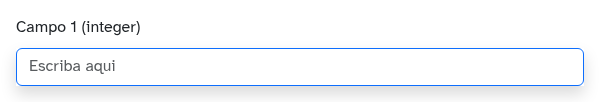
This function returns an input object of type integer, you can pass the same arguments that for the input object of type text
- @id => the id used by the object
- @class => allow to add more classes to the default form-control
- @placeholder => the text used as placeholder parameter
- @value => the value used as value parameter
- @disabled => this parameter raise the disabled flag
- @readonly => this parameter raise the readonly flag
- @required => this parameter raise the required flag
- @autofocus => this parameter raise the autofocus flag
- @tooltip => this parameter raise the title flag
- @accesskey => the key used as accesskey parameter
- @label => this parameter is used as text for the label
- @color => the color of the widget (primary, secondary, success, danger, warning, info, none)
- @onenter => the function executed when enter key is pressed
- @onchange => the function executed when onchange event is detected
Notes:
This widget requires the imask library and can be loaded automatically using the require feature:
- @lib/imaskjs/imask.min.js
1.4.12. Float constructor helper
saltos.bootstrap.__field.float = field
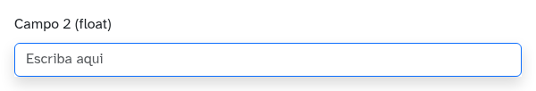
This function returns an input object of type float, you can pass the same arguments that for the input object of type text
- @id => the id used by the object
- @class => allow to add more classes to the default form-control
- @placeholder => the text used as placeholder parameter
- @value => the value used as value parameter
- @disabled => this parameter raise the disabled flag
- @readonly => this parameter raise the readonly flag
- @required => this parameter raise the required flag
- @autofocus => this parameter raise the autofocus flag
- @tooltip => this parameter raise the title flag
- @accesskey => the key used as accesskey parameter
- @label => this parameter is used as text for the label
- @color => the color of the widget (primary, secondary, success, danger, warning, info, none)
- @onenter => the function executed when enter key is pressed
- @onchange => the function executed when onchange event is detected
Notes:
This widget requires the imask library and can be loaded automatically using the require feature:
- @lib/imaskjs/imask.min.js
1.4.13. Color constructor helper
saltos.bootstrap.__field.color = field
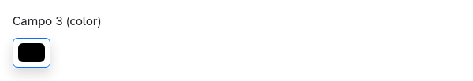
This function returns an input object of type color, you can pass the same arguments that for the input object of type text
- @id => the id used by the object
- @class => allow to add more classes to the default form-control
- @placeholder => the text used as placeholder parameter
- @value => the value used as value parameter
- @disabled => this parameter raise the disabled flag
- @readonly => this parameter raise the readonly flag
- @required => this parameter raise the required flag
- @autofocus => this parameter raise the autofocus flag
- @tooltip => this parameter raise the title flag
- @accesskey => the key used as accesskey parameter
- @label => this parameter is used as text for the label
- @color => the color of the widget (primary, secondary, success, danger, warning, info, none)
- @onenter => the function executed when enter key is pressed
- @onchange => the function executed when onchange event is detected
Notes:
Ths color input launch a warning if value is not in the format #rrggbb, for this reason it is set to #000000 if value is void
1.4.14. Date constructor helper
saltos.bootstrap.__field.date = field
This function returns an input object of type date, you can pass the same arguments that for the input object of type text
- @id => the id used by the object
- @class => allow to add more classes to the default form-control
- @placeholder => the text used as placeholder parameter
- @value => the value used as value parameter
- @disabled => this parameter raise the disabled flag
- @readonly => this parameter raise the readonly flag
- @required => this parameter raise the required flag
- @autofocus => this parameter raise the autofocus flag
- @tooltip => this parameter raise the title flag
- @accesskey => the key used as accesskey parameter
- @label => this parameter is used as text for the label
- @color => the color of the widget (primary, secondary, success, danger, warning, info, none)
- @onenter => the function executed when enter key is pressed
- @onchange => the function executed when onchange event is detected
1.4.15. Time constructor helper
saltos.bootstrap.__field.time = field
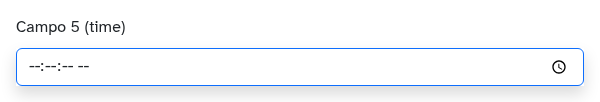
This function returns an input object of type time, you can pass the same arguments that for the input object of type text
- @id => the id used by the object
- @class => allow to add more classes to the default form-control
- @placeholder => the text used as placeholder parameter
- @value => the value used as value parameter
- @disabled => this parameter raise the disabled flag
- @readonly => this parameter raise the readonly flag
- @required => this parameter raise the required flag
- @autofocus => this parameter raise the autofocus flag
- @tooltip => this parameter raise the title flag
- @accesskey => the key used as accesskey parameter
- @label => this parameter is used as text for the label
- @color => the color of the widget (primary, secondary, success, danger, warning, info, none)
- @onenter => the function executed when enter key is pressed
- @onchange => the function executed when onchange event is detected
1.4.16. Datetime constructor helper
saltos.bootstrap.__field.datetime = field
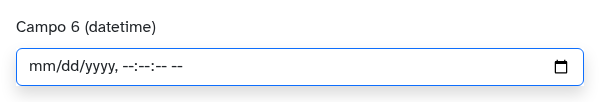
This function returns an input object of type datetime, you can pass the same arguments that for the input object of type text
- @id => the id used by the object
- @class => allow to add more classes to the default form-control
- @placeholder => the text used as placeholder parameter
- @value => the value used as value parameter
- @disabled => this parameter raise the disabled flag
- @readonly => this parameter raise the readonly flag
- @required => this parameter raise the required flag
- @autofocus => this parameter raise the autofocus flag
- @tooltip => this parameter raise the title flag
- @accesskey => the key used as accesskey parameter
- @label => this parameter is used as text for the label
- @color => the color of the widget (primary, secondary, success, danger, warning, info, none)
- @onenter => the function executed when enter key is pressed
- @onchange => the function executed when onchange event is detected
1.4.17. Textarea constructor helper
saltos.bootstrap.__field.textarea = field
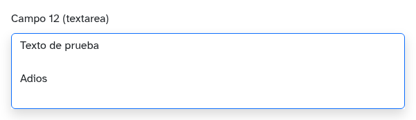
This function returns a textarea object with the autogrow plugin enabled
- @id => the id used by the object
- @class => allow to add more classes to the default form-control
- @placeholder => the text used as placeholder parameter
- @value => the value used as value parameter
- @disabled => this parameter raise the disabled flag
- @readonly => this parameter raise the readonly flag
- @required => this parameter raise the required flag
- @autofocus => this parameter raise the autofocus flag
- @tooltip => this parameter raise the title flag
- @accesskey => the key used as accesskey parameter
- @label => this parameter is used as text for the label
- @color => the color of the widget (primary, secondary, success, danger, warning, info, none)
- @height => the height used as style.minHeight parameter
- @onchange => the function executed when onchange event is detected
Notes:
This widget requires the autoheight library and can be loaded automatically using the require feature:
- @lib/autoheight/autoheight.min.js
1.4.18. Ckeditor constructor helper
saltos.bootstrap.__field.ckeditor = field
This function returns a textarea object with the ckeditor plugin enabled
- @id => the id used by the object
- @class => allow to add more classes to the default form-control
- @placeholder => the text used as placeholder parameter
- @value => the value used as value parameter
- @disabled => this parameter raise the disabled flag
- @readonly => this parameter raise the readonly flag
- @required => this parameter raise the required flag
- @autofocus => this parameter raise the autofocus flag
- @tooltip => this parameter raise the title flag
- @accesskey => the key used as accesskey parameter
- @label => this parameter is used as text for the label
- @color => the color of the widget (primary, secondary, success, danger, warning, info, none)
- @height => the height used as style.minHeight parameter
- @onchange => the function executed when onchange event is detected
Notes:
This widget requires the ckeditor library and can be loaded automatically using the require feature:
- @lib/ckeditor/ckeditor.min.js
The returned object contains a textarea with two new properties like ckeditor and set, the first contains the ckeditor object and the second is a function used to update the value of the ckeditor, intended to load new data.
1.4.19. Codemirror constructor helper
saltos.bootstrap.__field.codemirror = field
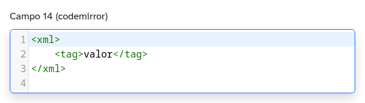
This function returns a textarea object with the codemirror plugin enabled
- @mode => used to define the mode parameter of the codemirror
- @id => the id used by the object
- @class => allow to add more classes to the default form-control
- @placeholder => the text used as placeholder parameter
- @value => the value used as value parameter
- @disabled => this parameter raise the disabled flag
- @readonly => this parameter raise the readonly flag
- @required => this parameter raise the required flag
- @autofocus => this parameter raise the autofocus flag
- @tooltip => this parameter raise the title flag
- @accesskey => the key used as accesskey parameter
- @label => this parameter is used as text for the label
- @color => the color of the widget (primary, secondary, success, danger, warning, info, none)
- @height => the height used as style.minHeight parameter
- @onchange => the function executed when onchange event is detected
- @indent => enables the indent feature, only available for xml, json, css and sql
Notes:
This widget requires the codemirror library and can be loaded automatically using the require feature:
- @lib/codemirror/codemirror.min.css
- @lib/codemirror/codemirror.min.js
The returned object contains a textarea with two new properties like codemirror and set, the first contains the codemirror object and the second is a function used to update the value of the codemirror, intended to load new data.
1.4.20. Indent helper
saltos.bootstrap.__indent_helper = (str, mode)
This function allow to indent the string using the mode, this function is intended to be used inside the codemirror widget, allowing to indent the contents like xml, json, css or sql
- @str => string that you want to indent
- @mode => mode used to indent (xml, json, css or sql)
1.4.21. Iframe constructor helper
saltos.bootstrap.__field.iframe = field
This function returns an iframe object, you can pass the follow arguments:
- @id => the id used by the object
- @src => the value used as src parameter
- @srcdoc => the value used as srcdoc parameter
- @class => allow to add more classes to the default form-control
- @height => the height used as style.minHeight parameter
- @label => this parameter is used as text for the label
- @color => the color of the widget (primary, secondary, success, danger, warning, info, none)
Notes:
This function allow to put contents in the srcdoc, as an extra feature, this content is embedded with a doctype with html, head and body, includes the default saltos font and to provide a security layer, this function creates an iframe with a sandbox and add to the srcdoc a meta to configure the CSP that must apply to the contents
To fix some issues with the iframe that adds some space between the bottom of the iframe and the parent container, we must to add the d-block to convert it from inline to block
1.4.22. Select constructor helper
saltos.bootstrap.__field.select = field
This function returns a select object, you can pass the follow arguments:
- @id => the id used by the object
- @class => allow to add more classes to the default form-select
- @disabled => this parameter raise the disabled flag
- @required => this parameter raise the required flag
- @autofocus => this parameter raise the autofocus flag
- @multiple => this parameter enables the multiple selection feature of the select
- @size => this parameter allow to see the options list opened with n (size) entries
- @value => the value used to detect the selected option
- @tooltip => this parameter raise the title flag
- @accesskey => the key used as accesskey parameter
- @rows => this parameter contains the list of options, each option must be an object with label and value entries
- @label => this parameter is used as text for the label
- @color => the color of the widget (primary, secondary, success, danger, warning, info, none)
- @onchange => the function executed when onchange event is detected
1.4.23. Multiselect constructor helper
saltos.bootstrap.__field.multiselect = field
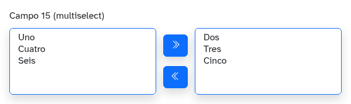
This function returns a multiselect object, you can pass the follow arguments:
- @id => the id used by the object
- @class => allow to add more classes to the default form-select
- @disabled => this parameter raise the disabled flag
- @required => this parameter raise the required flag
- @size => this parameter allow to see the options list opened with n (size) entries
- @value => the value used as src parameter
- @tooltip => this parameter raise the title flag
- @accesskey => the key used as accesskey parameter
- @rows => this parameter contains the list of options, each option must be an object with label and value entries
- @label => this parameter is used as text for the label
- @color => the color of the widget (primary, secondary, success, danger, warning, info, none)
- @separator => the separator string used to split and join the values
- @onchange => the function executed when onchange event is detected
Notes:
This widget is created joinin 2 selects and 2 buttons, the user must get the value using the hidden input that is builded using the original id passed by argument.
Warning:
Detected a bug with this widget in chrome in mobile browsers
1.4.24. Checkbox constructor helper
saltos.bootstrap.__field.checkbox = field
This function returns a checkbox object, you can pass the follow arguments:
- @id => the id used by the object
- @class => allow to add more classes to the default form-check
- @disabled => this parameter raise the disabled flag
- @readonly => this parameter raise the readonly flag
- @required => this parameter raise the required flag
- @label => this parameter is used as label for the checkbox
- @value => this parameter is used to check or unckeck the checkbox, the value must contain a number that raise as true or false in the if condition
- @tooltip => this parameter raise the title flag
- @accesskey => the key used as accesskey parameter
- @color => the color of the widget (primary, secondary, success, danger, warning, info, none)
- @onchange => the function executed when onchange event is detected
Notes:
This widget returns their value by setting a zero or one (0/1) value on the value of the input.
1.4.25. Switch constructor helper
saltos.bootstrap.__field.switch = field
This function returns a switch object, you can pass the follow arguments:
- @id => the id used by the object
- @class => allow to add more classes to the default form-check and form-switch
- @disabled => this parameter raise the disabled flag
- @readonly => this parameter raise the readonly flag
- @label => this parameter is used as label for the switch
- @value => this parameter is used to check or unckeck the switch, the value must contain a number that raise as true or false in the if condition
- @tooltip => this parameter raise the title flag
- @accesskey => the key used as accesskey parameter
- @color => the color of the widget (primary, secondary, success, danger, warning, info, none)
- @onchange => the function executed when onchange event is detected
Notes:
This widget uses the checkbox constructor
1.4.26. Button constructor helper
saltos.bootstrap.__field.button = field

This function returns a button object, you can pass the follow arguments:
- @id => the id used by the object
- @class => allow to add more classes to the default form-select
- @disabled => this parameter raise the disabled flag
- @autofocus => this parameter raise the autofocus flag
- @label => label to be used as text in the contents of the buttons
- @onclick => callback function that is executed when the button is pressed
- @tooltip => this parameter raise the title flag
- @accesskey => the key used as accesskey parameter
- @color => the color of the widget (primary, secondary, success, danger, warning, info, none)
- @collapse => a boolean to enable or disable the collapse feature in the button
- @target => the id of the element controlled by the collapse feature
- @addbr => this special feature adds a void label with a new line tag to align the button with the other elements that are label+widget
Notes:
The buttons adds the focus-ring classes to use this new feature that solves issues suck as hidden focus when you try to focus a button inside a modal, for example.
1.4.27. Password constructor helper
saltos.bootstrap.__field.password = field
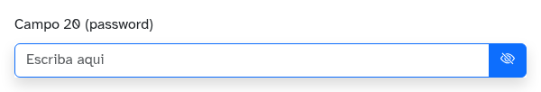
This function returns an input object of type password, you can pass some arguments as:
- @id => the id used by the object
- @class => allow to add more classes to the default form-control
- @placeholder => the text used as placeholder parameter
- @value => the value used as value parameter
- @disabled => this parameter raise the disabled flag
- @readonly => this parameter raise the readonly flag
- @required => this parameter raise the required flag
- @autofocus => this parameter raise the autofocus flag
- @tooltip => this parameter raise the title flag
- @accesskey => the key used as accesskey parameter
- @label => this parameter is used as text for the label
- @color => the color of the widget (primary, secondary, success, danger, warning, info, none)
- @onenter => the function executed when enter key is pressed
- @onchange => the function executed when onchange event is detected
- @autocomplete => set to false to enable the hiddens passwords trick
Notes:
This widget add an icon to the end of the widget with an slashed eye, this allow to see the entered password to verify it, in reality, this button swaps the input between password and text type, allowing to do visible or not the contents of the input
Setting the field.autocomplete=false enable the feature that tries to disable the autocomplete provided by the browsers password adding the autocomplete="new-password"
1.4.28. File constructor helper
saltos.bootstrap.__field.file = field
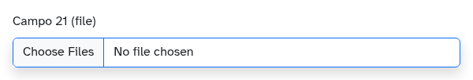
This function returns an input object of type password, you can pass some arguments as:
- @id => the id used by the object
- @class => allow to add more classes to the default form-control
- @disabled => this parameter raise the disabled flag
- @required => this parameter raise the required flag
- @autofocus => this parameter raise the autofocus flag
- @multiple => this parameter raise the multiple flag, intended to select more files at time
- @tooltip => this parameter raise the title flag
- @accesskey => the key used as accesskey parameter
- @label => this parameter is used as text for the label
- @color => the color of the widget (primary, secondary, success, danger, warning, info, none)
- @onchange => the function executed when onchange event is detected
Notes:
This control allow to select file from the tradicional input, and automatically, send it to the server using the addfiles action, add a row in the widget's table to show information about the new file and allow too to delete it using the trash button.
To get the data, the controls store each file information in each added row of the table and in addition, too join all information in a data structure of the input of type file.
The difference between this control and the older controls is that they send the files to the server and store the information related to the file on the server to be processed after the real upload action.
1.4.29. Link constructor helper
saltos.bootstrap.__field.link = field

This function creates a field similar of text but with the appearance of a link using a button, the object can receive the follow arguments:
- @id => the id used by the object
- @class => allow to add more classes to the default form-select
- @disabled => this parameter raise the disabled flag
- @autofocus => this parameter raise the autofocus flag
- @label => label to be used as text in the contents of the buttons
- @onclick => callback function that is executed when the button is pressed
- @tooltip => this parameter raise the title flag
- @accesskey => the key used as accesskey parameter
- @color => the color of the widget (primary, secondary, success, danger, warning, info, none)
- @collapse => a boolean to enable or disable the collapse feature in the button
- @target => the id of the element controlled by the collapse feature
- @addbr => this special feature adds a void label with a new line tag to align the button with the other elements that are label+widget
Notes:
This object is not a real link, it's a button that uses the btn-link class to get the link appearance
1.4.30. Label constructor helper
saltos.bootstrap.__field.label = field
This function returns a label object, you can pass some arguments as:
- @id => the id used to set the reference for to the object
- @class => allow to add more classes to the default form-label
- @label => this parameter is used as text for the label
- @tooltip => this parameter raise the title flag
1.4.31. Image constructor helper
saltos.bootstrap.__field.image = field
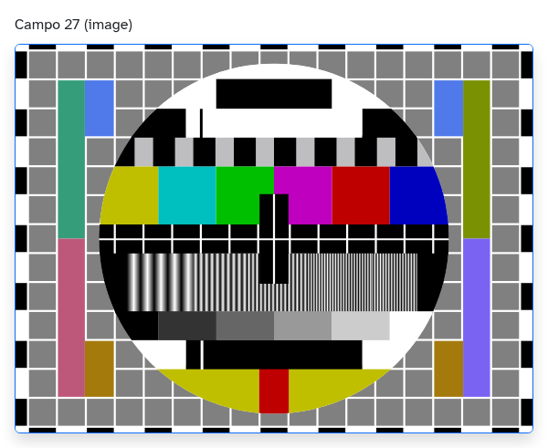
This function returns an image object, you can pass some arguments as:
- @id => the id used to set the reference for to the object
- @class => allow to add more classes to the default img-fluid
- @value => the value used as src parameter
- @alt => this parameter is used as text for the alt parameter
- @tooltip => this parameter raise the title flag
- @label => this parameter is used as text for the label
- @width => this parameter is used as width for the image
- @height => this parameter is used as height for the image
- @color => the color of the widget (primary, secondary, success, danger, warning, info, none)
1.4.32. Excel constructor helper
saltos.bootstrap.__field.excel = field
This function creates and returns an excel object, to do this they use the handsontable library, currently this library uses a privative license, by this reason, we are using the version 6.2.2 that is the latest release published using the MIT license.
This widget can receive the following arguments:
- @id => the id used to set the reference for to the object
- @class => allow to set the class to the div object used to allocate the widget
- @data => this parameter must contain a 2D matrix with the data that you want to show in the sheet
- @rowHeaders => can be an array with the headers that you want to use instead the def numbers
- @colHeaders => can be an array with the headers that you want to use instead the def letters
- @minSpareRows => can be a number with the void rows at the end of the sheet
- @contextMenu => can be a boolean with the desired value to allow or not the provided context menu of the widget
- @rowHeaderWidth => can be a number with the width of the headers rows
- @colWidths => can be an array with the widths of the headers cols
- @label => this parameter is used as text for the label
- @color => the color of the widget (primary, secondary, success, danger, warning, info, none)
- @afterChange => the afterChange function that receives one argument (changes), a 2D array containing information about each of the edited cells [row, prop, oldVal,, ...], you can do something like changes.forEach((row, prop, oldValue,)
- @autoWrapCol => used as autoWrapCol in the handsontable widget
- @autoWrapRow => used as autoWrapRow in the handsontable widget
Notes:
You can get the values after to do changes by accessing to the data of the div used to create the widget.
This widget requires the handsontable library and can be loaded automatically using the require feature:
- @lib/handsontable/handsontable.full.min.css
- @lib/handsontable/handsontable.full.min.js
1.4.33. Pdfjs constructor helper
saltos.bootstrap.__field.pdfjs = field
This function creates and returns a pdfviewer object, to do this they use the pdf.js library.
- @id => the id used to set the reference for to the object
- @class => allow to set the class to the div object used to allocate the widget
- @src => the file that contains the pdf document
- @srcdoc => the data that contains the pdf document
- @label => this parameter is used as text for the label
- @color => the color of the widget (primary, secondary, success, danger, warning, info, none)
Notes:
This widget requires the pdfjs library and can be loaded automatically using the require feature:
- @lib/pdfjs/pdf.min.mjs
- @lib/pdfjs/pdf.worker.min.mjs
The last file (the worker) is loaded by the library and not by SaltOS, is for this reason that this file not appear in the next requires
Change scale causes issues in scrollTop when pdfjs is used inside a modal, to prevent this, the two updates to the pdfViewer.currentScaleValue = 'update' will add a control to fix that modal scrollTop is the same.
1.4.34. Table constructor helper
saltos.bootstrap.__field.table = field
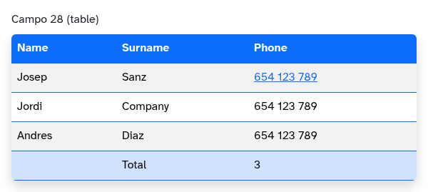
Returns a table using the follow params:
- @id => the id used to set the reference for to the object
- @class => allow to add more classes to the default table table-striped table-hover
- @header => array with the header to use
- @data => 2D array with the data used to mount the body table
- @footer => array with the footer to use
- @checkbox => add a checkbox in the first cell of each row, for mono or multi selection
- @dropdown => a boolean value to force the usage of the dropdown feature, void for auto detection
- @label => this parameter is used as text for the label
- @color => the color of the widget (primary, secondary, success, danger, warning, info, none)
- @nodata => text used when no data is found
- @actions => each row of the data can contain an array with the actions of each row
Each action can contain:
- @app => the application that must be used to check the permissions
- @action => the accion that must to be used to check the permissions
- @value => the text used as label in the button of the action
- @icon => the icon used in the button of the action
- @tooltip => the tooltip used in the button of the action
- @onclick => the onclick function that receives as argument the arg to access the action
Notes:
This function defines the yellow color used for the hover and active rows.
The header field must be an object with the labels, types, aligns, ..., of each field, if the header is ommited, then the data will be painted using the default order of the data without filters, the recomendation is to use header to specify which fields must to be painted, the order, the type and the alignment.
The actions will be added using a dropdown menu if more than one action appear in the the row data, the idea of this feature is to prevent that the icons uses lot of space of the row data, and for this reason, it will define the dropdown variable that enables or not the contraction feature
The elements of the data cells can contains an object with the field specification used to the saltos.bootstrap.field constructor, it is useful to convert some fields to inputs instead of simple text, too is able to use the type attribute in the header specification to identify if you want to use a column with some special type as for example, the icons
1.4.35. Alert constructor helper
saltos.bootstrap.__field.alert = field
This component allow to set boxes type alert in the contents, only requires:
- @id => the id used to set the reference for to the object
- @class => allow to add more classes to the default alert
- @title => title used in the body of the card, not used if void
- @text => text used in the body of the card, not used if void
- @body => this option allow to specify an specific html to the body of the card, intended to personalize the body's card
- @close => boolean to specify if you want to add the dismissible option to the alert
- @label => this parameter is used as text for the label
- @color => the color of the widget (primary, secondary, success, danger, warning, info, none)
Note:
I have added the dismissible option using the close attribute, too I have added a modification for the style to allow the content to use the original size of the alert, in a future, I don't know if I maintain this or I remove it, but at the moment, this is added by default
1.4.36. Card constructor helper
saltos.bootstrap.__field.card = field
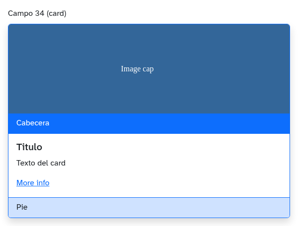
This functions creates a card with a lot of options:
- @id => the id used to set the reference for to the object
- @image => image used as top image in the card, not used if void
- @alt => alt text used in the top image if you specify an image
- @header => text used in the header, not used if void
- @footer => text used in the footer, not used if void
- @title => title used in the body of the card, not used if void
- @text => text used in the body of the card, not used if void
- @body => this option allow to specify an specific html to the body of the card, intended to personalize the body's card
- @label => this parameter is used as text for the label
- @color => the color of the widget (primary, secondary, success, danger, warning, info, none)
1.4.37. Chart.js constructor helper
saltos.bootstrap.__field.chartjs = field
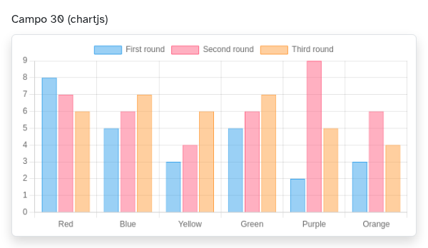
This function creates a chart using the chart.js library, to do this requires de follow arguments:
- @id => the id used by the object
- @mode => to specify what kind of plot do you want to do: can be bar, line, doughnut, pie
- @data => the data used to plot the graph, see the data argument used by the graph.js library
- @label => this parameter is used as text for the label
Notes:
To be more practice and for stetic reasons, I'm adding to all datasets the borderWidth = 1
This widget requires the chartjs library and can be loaded automatically using the require feature:
- @lib/chartjs/chart.umd.min.js
1.4.38. Tags constructor helper
saltos.bootstrap.__field.tags = field
This function creates a text input that allow to manage tags, each tag is paint as a badge and each tag can be deleted, the result is stored in a text using a comma separated values
- @id => the id used by the object
- @value => comma separated values
- @datalist => array with options for the datalist, used as autocomplete for the text input
- @label => this parameter is used as text for the label
- @class => allow to add more classes to the default form-control
- @placeholder => the text used as placeholder parameter
- @disabled => this parameter raise the disabled flag
- @readonly => this parameter raise the readonly flag
- @required => this parameter raise the required flag
- @autofocus => this parameter raise the autofocus flag
- @tooltip => this parameter raise the title flag
- @accesskey => the key used as accesskey parameter
- @color => the color of the widget (primary, secondary, success, danger, warning, info, none)
- @separator => the separator string used to split and join the tags
- @onchange => the function executed when onchange event is detected
- @create => allow to specify if the widget can create new items
Notes:
This widget contains a datalist with ajax autoload, this allow to send requests to the desired path to retrieve the contents of the datalist for the autocomplete, this request uses an historical keyword that can be retrieved in the json/term
This widget uses the tom-select plugin, more info in their project website:
1.4.39. One tag constructor helper
saltos.bootstrap.__field.onetag = field

This function creates a select that allow to be used as a text input like a select widget and allow to create new items writing directly inside of the widget.
- @id => the id used by the object
- @value => the value of this field
- @datalist => array with options for the datalist, used as autocomplete for the text input
- @label => this parameter is used as text for the label
- @class => allow to add more classes to the default form-control
- @placeholder => the text used as placeholder parameter
- @disabled => this parameter raise the disabled flag
- @readonly => this parameter raise the readonly flag
- @required => this parameter raise the required flag
- @autofocus => this parameter raise the autofocus flag
- @tooltip => this parameter raise the title flag
- @accesskey => the key used as accesskey parameter
- @color => the color of the widget (primary, secondary, success, danger, warning, info, none)
- @onchange => the function executed when onchange event is detected
- @create => allow to specify if the widget can create new items
Notes:
This widget contains a datalist with ajax autoload, this allow to send requests to the desired path to retrieve the contents of the datalist for the autocomplete, this request uses an historical keyword that can be retrieved in the json/term
This widget uses the tom-select plugin, more info in their project website:
1.4.40. Srcdoc helper
saltos.bootstrap.__iframe_srcdoc_helper = html
This function adds the needed environment to the html to improve the render of the html, this function is intended to be used inside the iframw widget
- @html => the code that you need to process
1.4.41. Datalist helper
saltos.bootstrap.__datalist_helper = datalist
This function is a helper function used by the tags and onetag widgets and is intended to be used as load function by the tomselect library.
- @datalist => the original datalist that can be an string or an object
1.4.42. Value helper
saltos.bootstrap.__value_helper = (value, separator)
This function is a helper function used by the tags widget and is intended to be used to convert a string into an array using the separator for split.
- @value => the original value that must to be processed
- @separator => the separator string used in the split
1.4.43. Gallery constructor helper
saltos.bootstrap.__field.gallery = field
This function returns a gallery object, you can pass some arguments as:
- @id => the id used to set the reference for to the object
- @class => allow to add more classes to the default img-fluid
- @label => this parameter is used as text for the label
- @images => the array with images, each image can be a string or object
- @color => the color of the widget (primary, secondary, success, danger, warning, info, none)
This widget requires venobox, masonry and imagesloaded
This widget requires the venobox, masonry and imagesloaded libraries and can be loaded automatically using the require feature:
- @lib/venobox/venobox.min.css
- @lib/venobox/venobox.min.js
- @lib/masonry/masonry.pkgd.min.js
- @lib/imagesloaded/imagesloaded.pkgd.min.js
1.4.44. Placeholder helper
saltos.bootstrap.__field.placeholder = field
This function returns a grey area that uses all space with the placeholder glow effect
- @id => id used in the original object, it must be replaced when the data will be available
- @color => the color of the widget (primary, secondary, success, danger, warning, info, none)
- @height => the height used as style.height parameter
- @label => this parameter is used as text for the label
1.4.45. List widget constructor helper
saltos.bootstrap.__field.list = field
Returns a list widget using the follow params:
- @id => the id used to set the reference for to the object
- @class => allow to add more classes to the default list-group
- @onclick => this parameter allow to enable or disable the buttons in the list
- @data => 2D array with the data used to mount the list
- @truncate => this parameter add the text-truncate to all texts of the items
- @checkbox => add a checkbox in the first cell of each row, for mono or multi selection
- @nodata => text used when no data is found
- @label => this parameter is used as text for the label
Each item in the data can contain:
- @header => string with the header to use
- @body => string with the data to use
- @footer => string with the footer to use
- @onclick => the onclick function that receives as argument the url to access the action
- @url => this parameter is used as argument for the onclick function
- @active => this parameter raise the active flag
- @disabled => this parameter raise the disabled flag
- @actions => this parameter allow to recicle the actions feature of the list action
- @id => the id used to set the reference for each checkbox
As an extra fields, the widget allow to provide multiple texts and icons
- @header_text => an small text added at the end of the same line of the header
- @header_icon => an small icon added at the end of the same line of the header
- @header_color => the color used in the previous small text and icon
- @body_text => an small text added at the end of the same line of the body
- @body_icon => an small icon added at the end of the same line of the body
- @body_color => the color used in the previous small text and icon
- @footer_text => an small text added at the end of the same line of the footer
- @footer_icon => an small icon added at the end of the same line of the footer
- @footer_color => the color used in the previous small text and icon
Notes:
The first onclick parameter is used to raise the construction of the widget and items, depending of this parameter, the function uses a dir or an ul element to do the list
1.4.46. Tabs widget constructor helper
saltos.bootstrap.__field.tabs = field
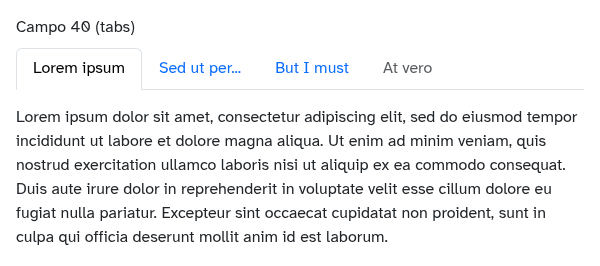
Returns a tabs widget using the follow params:
- @id => the id used to set the reference for to the object
- @items => 2D array with the data used to mount the tab and content
- @label => this parameter is used as text for the label
Each item in the tabs can contain:
- @label => string with the text label to use in the tab button
- @content => string with the content to be used in the content area
- @active => this parameter raise the active flag
- @disabled => this parameter raise the disabled flag
1.4.47. Pills widget constructor helper
saltos.bootstrap.__field.pills = field
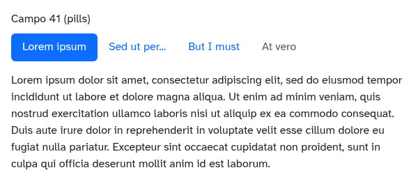
Returns a tabs widget using the follow params:
- @id => the id used to set the reference for to the object
- @items => 2D array with the data used to mount the tab and content
- @label => this parameter is used as text for the label
Each item in the tabs can contain:
- @label => string with the text label to use in the tab button
- @content => string with the content to be used in the content area
- @active => this parameter raise the active flag
- @disabled => this parameter raise the disabled flag
1.4.48. V-Pills widget constructor helper
saltos.bootstrap.__field.vpills = field
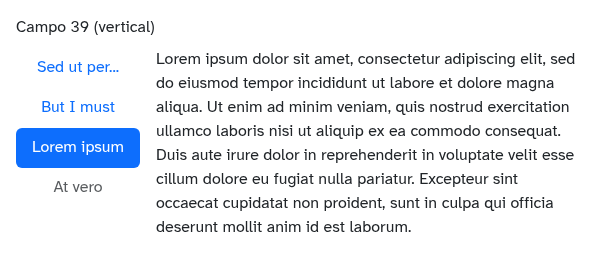
Returns a tabs widget using the follow params:
- @id => the id used to set the reference for to the object
- @items => 2D array with the data used to mount the tab and content
- @label => this parameter is used as text for the label
Each item in the tabs can contain:
- @label => string with the text name to use in the tab button
- @content => string with the content to be used in the content area
- @active => this parameter raise the active flag
- @disabled => this parameter raise the disabled flag
1.4.49. Accordion widget constructor helper
saltos.bootstrap.__field.accordion = field
Returns an accordion widget using the follow params:
- @id => the id used to set the reference for to the object
- @flush => if true, add the accordion-flush to the widget
- @multiple => if true, allow to have open multiple items at same time
- @items => 2D array with the data used to mount the accordion and content
- @label => this parameter is used as text for the label
Each item in the tabs can contain:
- @label => string with the text label to use in the tab button
- @content => string with the content to be used in the content area
- @active => this parameter raise the active flag
1.4.50. JS Tree constructor helper
saltos.bootstrap.__field.jstree = field
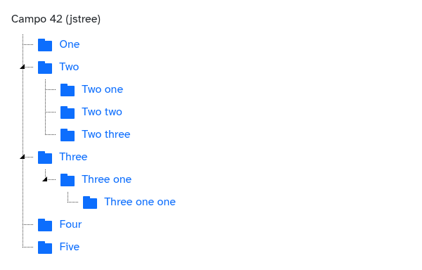
This function returns a jstree object using the follow parameters:
- @id => the id used to set the reference for to the object
- @class => allow to add more classes to the default table table-striped table-hover
- @open => the open boolean that open all nodes
- @onclick => the callback that receives the id as argument of the selected item
- @nodata => text used when no data is found
- @label => this parameter is used as text for the label
- @data => the data used to make the tree, must to be an array with nodes
Each node must contain the follow items:
- @id => the id of the node (used in the onclick callback)
- @text => the text of the node
- @children => an array with the nodes childrens
1.4.51. Dropdown constructor helper
saltos.bootstrap.__field.dropdown = field
This function returns a dropdown object, you can pass the follow arguments:
- @id => the id used by the object
- @class => allow to add more classes to the default btn-group
- @disabled => this parameter raise the disabled flag
- @label => label to be used as text in the contents of the buttons
- @onclick => callback function that is executed when the button is pressed
- @split => to use a split button instead of single button
- @tooltip => this parameter raise the title flag
- @icon => the icon used in the main button
- @accesskey => the key used as accesskey parameter
- @color => the color of the widget (primary, secondary, success, danger, warning, info, none)
- @menu => with this option, you can specify an array with the contents of the dropdown menu
- @label => label of the menu
- @icon => icon of the menu
- @disabled => this boolean allow to disable this menu entry
- @active => this boolean marks the option as active
- @onclick => the callback used when the user select the menu
- @divider => you can set this boolean to true to convert the element into a divider
- @tooltip => this parameter raise the title flag
- @accesskey => the key used as accesskey parameter
Notes:
The tooltip can not be applied to the dropdown button because causes an internal error, in this case, the tooltip only are applied in the first button of the split button and all items of the menu, as brief, tootip only can be applied in all real actions buttons and not in the dropdown button that opens the real dropdown menu
1.4.52. Private text constructor helper
saltos.bootstrap.__text_helper = field
This function returns an input object of type text, you can pass some arguments as:
- @id => the id used by the object
- @class => allow to add more classes to the default form-control
- @placeholder => the text used as placeholder parameter
- @value => the value used as value parameter
- @disabled => this parameter raise the disabled flag
- @readonly => this parameter raise the readonly flag
- @required => this parameter raise the required flag
- @autofocus => this parameter raise the autofocus flag
- @tooltip => this parameter raise the title flag
- @color => the color of the widget (primary, secondary, success, danger, warning, info, none)
- @onenter => the function executed when enter key is pressed
- @onchange => the function executed when onchange event is detected
- @autosave => allow to disable the autosave feature for this field, true by default
Notes:
This function is intended to be used by other helpers of the form_field constructor
1.4.53. Private textarea constructor helper
saltos.bootstrap.__textarea_helper = field
This function returns a textarea object, you can pass the follow arguments:
- @id => the id used by the object
- @class => allow to add more classes to the default form-control
- @placeholder => the text used as placeholder parameter
- @value => the value used as value parameter
- @disabled => this parameter raise the disabled flag
- @readonly => this parameter raise the readonly flag
- @required => this parameter raise the required flag
- @autofocus => this parameter raise the autofocus flag
- @tooltip => this parameter raise the title flag
- @color => the color of the widget (primary, secondary, success, danger, warning, info, none)
- @onchange => the function executed when onchange event is detected
- @autosave => allow to disable the autosave feature for this field, true by default
Notes:
This function is intended to be used by other helpers of the form_field constructor
1.4.54. Private shadow constructor helper
saltos.bootstrap.__shadow_helper = obj
This function creates a shadow wrapper around a given DOM element.
It generates a <div> element with the class "shadow", appends the provided object (obj) as its child, and returns the resulting DOM structure.
- @obj => The DOM element to be wrapped inside the shadow container.
Returns the <div> element containing the original object as a child.
1.4.55. Private tooltip constructor helper
saltos.bootstrap.__tooltip_helper = obj
This function is intended to enable the tooltip in the object, too it try to do some extra features: program that only show the tooltip when hover and hide when will get the focus or get the click event
- @obj => the object that you want to enable the tooltip feature
1.4.56. Private tooltip hide helper
saltos.bootstrap.__tooltip_hide = ()
This function is intended to hide all running tooltips, it's used when some widgets replaces the old elements by new elements, if the tooltip is show when the transition happens, it's necessary to remove it to prevent a blocking elements in the user interface.
1.4.57. Label helper
saltos.bootstrap.__label_helper = field
This function is a helper for label field, it is intended to returns the label object or a void string, this is because if no label is present in the field argument, then an empty string is returned, in the reception of the result, generally this is added to an object and it is ignored because an empty string is not an element, this thing is used by the optimizer to removes the unnecessary envelopment
- @field => the field that contains the label to be added if needed
1.4.58. Label Combine
saltos.bootstrap.__label_combine = (field, old)
This function combine the label with the object, to do it, tries to create a new container object to put the label and the passed object, and then tries to optimize to detect if the label is void
- @field => the field that contains the label
- @old => the object
Notes:
This function acts as helper to add a label by the constructors that not implement any specific label container, in the other cases, each constructor must to implement their code because each case is different
1.4.59. Onclick helper
saltos.bootstrap.__onclick_helper = (obj, fn)
This function is a helper function that adds the onclick event listener to the obj using the correct way to do it, to do it, checks the type of fn.
- @obj => the object where you want to add the onclick event
- @fn => the function that must be executed when onclick
1.4.60. Onchange helper
saltos.bootstrap.__onchange_helper = (obj, fn)
This function is a helper function that adds the onchange event listener to the obj using the correct way to do it, to do it, checks the type of fn.
- @obj => the object where you want to add the onchange event
- @fn => the function that must be executed when onchange
1.4.61. Onenter helper
saltos.bootstrap.__onenter_helper = (obj, fn)
This function adds the event and detects the enter key in order to execute fn
- @obj => the object that you want to enable the onenter feature
- @fn => the function executed when the onenter is raised
1.4.62. Menu constructor helper
saltos.bootstrap.menu = args
This function creates a menu intended to be used in navbar, nabs and tabs
- @class => the class used in the main ul element
- @menu => an array with the follow elements:
- @label => label of the menu
- @id => id used in the button element
- @icon => icon of the menu
- @disabled => this boolean allow to disable this menu entry
- @active => this boolean marks the option as active
- @onclick => the callback used when the user select the menu
- @dropdown_menu_end => this trick allow to open the dropdown menu from the end to start
- @menu => with this option, you can specify an array with the contents of the dropdown menu
- @label => label of the menu
- @id => id used in the button element
- @icon => icon of the menu
- @disabled => this boolean allow to disable this menu entry
- @active => this boolean marks the option as active
- @onclick => the callback used when the user select the menu
- @divider => you can set this boolean to true to convert the element into a divider
1.4.63. Navbar constructor helper
saltos.bootstrap.navbar = args
This component creates a navbar intended to be used as header
- @id => the id used by the object
- @brand => contains an object with the label, image, width and height to be used
- @color => the color of the widget (primary, secondary, success, danger, warning, info, none)
- @pos => position of the navbar, can be fixed-top, fixed-bottom, sticky-top, sticky-bottom
- @class => class added to the navbar item
- @label => text used in the brand
- @image => filename of the brand image
- @alt => alt text used in the brand image
- @width => width of the brand image
- @height => height of the brand image
- @class => class added to the navbar-brand item
- @items => contains an array with the objects that will be added to the collapse
Notes:
If you want to use an image that uses all height of the navbar, you can set the class and brand.class to py-0, the main idea is to use a combination of paddings with a brand to gets a navbar of 56px of height
1.4.64. Modal constructor helper object
saltos.bootstrap.__modal = {};
This object is used to store the element and the instance of the modal
1.4.65. Modal constructor helper
saltos.bootstrap.modal = args
This function creates a bootstrap modal and open it, offers two ways of usage:
1) you can pass a string to get a quick action
- @close => this string close the current modal
- @isopen => this string is used to check if some modal is open at the moment
2) you can pass an object with the follow items, intended to open a new modal
- @id => the id used by the object
- @class => allow to add more classes to the default dialog
- @title => title used by the modal
- @close => text used in the close button for aria purposes
- @body => the content used in the modal's body
- @footer => the content used in the modal's footer
- @static => forces the modal to be static (prevent close by clicking outside the modal or by pressing the escape key)
- @color => the color of the widget (primary, secondary, success, danger, warning, info, none)
Returns a boolean that indicates if the modal can be open or not
Notes:
This modal will be destroyed (instance and element) when it closes, too is important to undestand that only one modal is allowed at each moment.
Body and footer allow to use a string containing a html fragment or an object, and the footer too detects that the string contains something different to void, and if void content is detected, then the footer is removed.
As an extra bonus, this widget has some tricks to improve the style of the footer, as you can see in the modal-footer part by removing the border and the top padding.
1.4.66. Offcanvas constructor helper object
saltos.bootstrap.__offcanvas = {};
This object is used to store the element and the instance of the offcanvas
1.4.67. Offcanvas constructor helper
saltos.bootstrap.offcanvas = args
This function creates a bootstrap offcanvas and open it, offers two ways of usage:
1) you can pass a string to get a quick action
- @close => this string close the current offcanvas
- @isopen => this string is used to check if some offcanvas is open at the moment
2) you can pass an object with the follow items, intended to open a new offcanvas
- @id => the id used by the object
- @pos => allow to specify the position of the offcanvac (start, end, top or bottom)
- @title => title used by the offcanvas
- @close => text used in the close button for aria purposes
- @body => the content used in the offcanvas's body
- @static => forces the offcanvas to be static (prevent close by clicking outside the offcanvas or by pressing the escape key)
- @backdrop => to configure the backdrop feature (true or false)
- @keyboard => to configure the keyboard feature (true or false)
- @color => the color of the widget (primary, secondary, success, danger, warning, info, none)
- @resize => the resize allow to the offcanvas to resize the contents of the screen to prevent offcanvas from hiding things
Returns a boolean that indicates if the offcanvas can be open or not
Notes:
This offcanvas will be destroyed (instance and element) when it closes, too is important to undestand that only one offcanvas is allowed at each moment.
Body allow to use a string containing a html fragment or an object, as the modal body.
The resize option only works with start and end positions, too you can use left or right as replacements for start and end positions, the resize will be disabled in top or bottom positions.
1.4.68. Toast constructor helper
saltos.bootstrap.toast = args
This function creates a bootstrap toast and show it, and can accept the follow params:
- @id => the id used by the object
- @class => allow to add more classes to the default toast
- @title => title used by the toast
- @subtitle => small text used by the toast
- @close => text used in the close button for aria purposes
- @body => the content used in the toast's body
- @color => the color of the widget (primary, secondary, success, danger, warning, info, none)
Returns a boolean that indicates if the toast can be created (see the hash note)
Notes:
The toast will be destroyed (instance and element) when it closes.
All toasts are added to a toast-container placed in the body of the document, this container is created automatically if it not exists when the first toast need it.
Each toast includes a hash to prevent the creation of repeated toasts.
Body allow to use a string containing a html fragment or an object, as the modal body.
1.4.69. Accesskey listener
window.addEventListener('keydown', event
This function is intended to improve the default accesskey in the object by adding features suck as combinations of keys like ctrl+shift+f or ctrl+delete
- @obj => the object that you want to enable the accesskey feature
1.4.70. Window match media
saltos.bootstrap.window_match_media = window.matchMedia('(prefers-color-scheme: dark)');
This function returns an object intended to monitorize the bs_theme
1.4.71. Set data_bs_theme
saltos.bootstrap.set_data_bs_theme = e
This function sets the data_bs_theme attribute to enable or disable the dark bs theme
1.4.72. Check bs theme
saltos.bootstrap.check_bs_theme = theme
This function checks the bs theme
- @theme => Can be auto, light or dark
1.4.73. Set bs theme
saltos.bootstrap.set_bs_theme = theme
This function sets the bs theme
- @theme => Can be auto, light or dark
1.4.74. Get bs theme
saltos.bootstrap.get_bs_theme = ()
Retrieve the bs_theme stored in the localStorage
1.4.75. Check css theme
saltos.bootstrap.check_css_theme = theme
This function checks the css theme
- @theme => Can be default or one of the themes
1.4.76. Set css theme
saltos.bootstrap.set_css_theme = theme
This function sets the css theme
- @theme => Can be default or one of the themes
1.4.77. Get css theme
saltos.bootstrap.get_css_theme = ()
Retrieve the css_theme stored in the localStorage
1.5. Common helper module
web/js/common.js
This fie contains useful functions related to the common applications
1.5.1. Common helper object
saltos.common = {};
This object stores all application functions and data
1.5.2. Profile screen
saltos.common.profile = ()
This function allow to open the profile screen in a offcanvas widget
1.5.3. Help screen
saltos.common.help = ()
This function allow to open the help screen in a modal widget
1.5.4. Logout feature
saltos.common.logout = async ()
This function execute the deauthtoken action and jump to the login screen
1.5.5. Filter screen
saltos.common.filter = ()
This function allow to open the filter screen in a offcanvas widget
1.5.6. Download helper
saltos.common.download = file
This function allow to download files, to do it, make the ajax request and using the base64 data response, sets the href of an anchor created dinamically to emulate the download action
- @file => the file data used to identify the desired file in the backend part
1.5.7. Delete helper
saltos.common.delete = file
This function allow to remove the files and notes in the files and notes widgets
- @file => the file or note string path
1.5.8. Version common helper
saltos.common.version = ()
This function open the version widget
1.5.9. Log common helper
saltos.common.log = ()
This function open the log widget
1.5.10. Edit common helper
saltos.common.edit = ()
This function open the edit screen
1.5.11. Create common helper
saltos.common.create = ()
This function open the create screen
1.5.12. Viewpdf common helper
saltos.common.viewpdf = file
This function open the viewpdf widget
1.5.13. Remove common helper
saltos.common.__remove_helper = id
This function works as helper for the allfiles and allnotes functions and tries to detect if the table identified by the argument contains something
- @id => the id of the table
1.5.14. Allfiles common helper
saltos.common.allfiles = ()
This function remove the allfiles table if it is void
1.5.15. Allnotes common helper
saltos.common.allnotes = ()
This function remove the allnotes table if it is void
1.5.16. View selected registers in PDF format
saltos.common.viewpdf_checkbox = ()
This method opens a PDF viewer to display the selected registers. If no registers are selected, it prompts the user to select registers first.
1.5.17. Download selected registers as PDF
saltos.common.download_checkbox = ()
This method downloads the selected registers in PDF format. If no registers are selected, it prompts the user to select registers first.
1.6. Core helper module
web/js/core.js
This fie contains useful functions related to the core application, provides the low level features for manage errors, logs, manipulates html and DOM objects, manage ajax requests, and more things
1.6.1. Core helper object
saltos.core = {};
This object stores all core functions and data
1.6.2. Error management
saltos.core.adderror = async (message, source, lineno, colno, stack)
This function allow to SaltOS to log in server the javascript errors produced in the client's browser
- @message => the error message
- @source => the filename where the error was triggered
- @lineno => the line number where the error was triggered
- @colno => the column number where the error was triggered
- @stack => the backtrace stack of all execution until the error
Notes:
This function is called from some addEventListeners, the original was the error event but when change the ajax requests from xhr to fetch to setup the proxy feature, the errors was mapped by the event unhandledrejection.
1.6.3. Old error handler
window.addEventListener('error', event
This code allow to capture the old errors triggered outside the fetch requests
1.6.4. New error handler
window.addEventListener('unhandledrejection', event
This code allow to capture the new errors triggered inside the fetch requests
1.6.5. Log management
saltos.core.addlog = msg
This function allow to send messages to the addlog of the server side, requires an argument:
- @msg => the message that do you want to log on the server log file
1.6.6. Check params
saltos.core.check_params = (obj, params, value = '')
This function allow to prepare parameters to be used by other functions, the main idea is that the other functions can access to properties of an object without getting errors caused by the nonexistence, to do this, checks for the existence of all params in the obj and if some param is not found, then define it using the default value passed:
- @obj => the object that contains the arguments, for example
- @params => an array with the arguments that must to exists
- @value => the default value used if an argument doesn't exists
1.6.7. UniqID
saltos.core.uniqid = ()
This function generates an unique id formed by the word 'id' and a number that can take values between 0 and 999999, useful when some widget requires an id and the user don't provide it to the widget constructor
1.6.8. When visible
saltos.core.when_visible = (obj, fn, args)
This function allow to execute some code when the object is visible, useful for third part widgets as ckeditor or codemirror that requires a rendered environemt to initialize their code and paint the widget correctly
- @obj => the object that do you want to monitorize the visibility
- @fn => the callback that you want to execute
- @args => the arguments passed to the callback when execute it
Notes:
As an extra feature, the object can be an string containing the id of the object, intended to be used when the object not exists at the moment to call this function
1.6.9. Get keycode
saltos.core.get_keycode = event
This function allow to get the keycode of a keyboard event detecting the browser
- @event => the event that contains the keyboard data
1.6.10. Get keyname
saltos.core.get_keyname = event
This function allow to get the keyname of a keyboard event detecting the browser
- @event => the event that contains the keyboard data
1.6.11. HTML builder
saltos.core.html = (...args)
This function allow to create an DOM fragment from a string that contains html code, can work with one or two arguments:
- @type => the type used when create the container element
- @html => contains the html code that you want to use as template
The main use is only using the html argument and omiting the type, in this case, the type used will be a div, but if you want to create a fragment of object, for example as tr or td, you need to specify that the coontainer type used to create the objects must to be a table or tr, is you don't specify the type, the div container creates a breaked portion of the element and they don't works as expected because the DOM builded is bad, you can see this problem in action when work with tables and try to create separate portions of the table as trs or tds.
1.6.12. Ajax helper array
saltos.core.__ajax = [];
This array allow to the ajax feature to manage the active request, intended to abort if it is needed when onhashchange.
1.6.13. AJAX
saltos.core.ajax = args
This function allow to use ajax using the same form that with jQuery without jQuery
- @url => url of the ajax call
- @data => data used in the body of the request
- @method => the method of the request (can be GET or POST, GET by default)
- @success => callback function for the success action (optional)
- @error => callback function for the error action (optional)
- @abort => callback function for the abort action (optional)
- @abortable => boolean to enable or disable the abort feature (false by default)
- @content_type => the content-type that you want to use in the transfer
- @proxy => add the Proxy header with the value passed, intended to be used by the SaltOS PROXY
- @token => add the Token header with the value passed, intended to be used by the SaltOS API
- @lang => add the Lang header with the value passed, intended to be used by the SaltOS API
- @headers => an object with the headers that you want to send
The main idea of this function is to abstract the usage of the XMLHttpRequest in a simple way as jQuery do but without using jQuery.
The catch part is intended to control the errors caused during the ajax execution, in this case is important to understand that the catch can be triggered by errors caused by network errors or by other cases like a code error, a throw new error or something similar like this, to fix it, the error and abort arguments will be used only when abortError or typeError appear in the error.name
1.6.14. Fix key
saltos.core.fix_key = arg
This function is intended to fix the keys of the objects, this is caused because you can not have 2 repeated keys in an object, to have more entries with the same name, SaltOS add a suffix by adding #num, with this trick, SaltOS is able to process XML files with the same node name and convert it to an array structure, and when convert this to json, the same problem appear and for this reason, exists this function here
- @arg => can be an string or an array of strings and returns the same structure with the keys fixed
1.6.15. Copy object
saltos.core.copy_object = arg
This function is intended to do copies of objects using as intermediate a json file
- @arg => the object that you want to copy
1.6.16. Optimizer object
saltos.core.optimize = obj
This function checks an object to see if only contains one children and in this case, returns directly the children instead of the original object, otherwise nothing to do and returns the original object
- @obj => the object to check and optimize
1.6.17. Require helper array
saltos.core.__require = {};
This array allow to the require feature to control the loaded libraries
1.6.18. Require feature
saltos.core.require = (files, callback)
This function allow the other functions to declare their requirements to previously load the desired file intead of create the object and throwing an error.
- @file => the file desired to be loaded
Notes:
This function is intended to load styles (css files) or javacript code (js files), in each case, they uses a different technique, for css the load is asynchronous and for javascript the load will be synchronous.
1.6.19. Eval Bool
saltos.core.eval_bool = arg
This function returns a boolean depending on the input evaluation, the main idea is to get an string, for example, and determine if must be considered true or false otherwise returns the original argument and send a log message to the console.
The valid inputs are the strings one, zero, void, true, false, on, off, yes and no
- @arg => the value that do you want to evaluates as boolean
Notes:
This function is the same feature that the same function proviced by the backend by the php/autoload/xml2array.php file with more javascript details as type detection.
1.6.20. toString function
saltos.core.toString = arg
This function tries to convert to string from any other formats as boolean, number, null, undefined or other type.
1.6.21. Is attr value
saltos.core.is_attr_value = data
This function return true if the data argument is an object with #attr and value
- @data => the data that wants to check
1.6.22. Join attr value
saltos.core.join_attr_value = data
This function return an object that contains all elements of the #attr and value
- @data => the data that wants to join
Notes:
If the content of value is only a string, then the result will be an array with the elements of the #attr joined with a new element with the name value and with the contents of the original value.
1.6.23. Encode Bar Chars
saltos.core.encode_bad_chars = (cad, pad = '_', extra = '')
This function tries to replace accender chars and other extended chars into an ascii chars, to do it, they define an array with the pairs of chars to do a quick replace, too is converted all to lower and are removed all chars that are out of range (valid range are from 0-9 and from a-z), the function allow to specify an extra parameter to add extra chars that must to be allowed in the output, all other chars will be converted to the padding argument, as a bonus extra, all padding repetitions will be removed to only allow one pading char at time
- @cad => the input string to encode
- @pad => the padding char using to replace the bar chars
- @extra => the list of chars allowed to appear in the output
1.6.24. Prepare Words
saltos.core.prepare_words = (cad, pad = ' ')
This function allow to prepare words removing repetitions in the padding char
- @cad => the input string to prepare
- @pad => the padding char using to replace the repetitions
Notes:
Apart of remove repetitions of the padding char, the function will try to remove padding chars in the start and in the end of the string
1.6.25. Main core code
document.addEventListener('DOMContentLoaded', event
This is the code that must to be executed to initialize all requirements of this module
1.6.26. Proxy feature
saltos.core.proxy = msg
This function is intended to send messages to the proxy feature
1.6.27. Online sync
window.addEventListener('online', event
This function send a sync message to the proxy when navigator detects an online change
1.6.28. Get code from file and line
saltos.core.__get_code_from_file_and_line = (file = 'unknown', line = 'unknown')
This function returns the string that contains the PATHINFO_FILENAME and the line to idenfify the launcher of an error, for example
- @file => filename used to obtain the first part of the code
- @line => line used to construct the last part of the code
1.6.29. Timestamp helper
saltos.core.timestamp = (offset = 0)
This function is a helper to obtain the timestamp in seconds with the desidet offset
- @offset => offset added to the timestamp, negative to go back in the time
1.6.30. Human Size
saltos.core.human_size = (size, pre = '', post = '')
Return the human size (G, M, K or original value)
- @size => the size that you want convert to human size
- @pre => string added between the number and the unit letter post => string added after the unit letter at the end
1.6.31. Check network
saltos.core.check_network = async ()
This function checks the network state by sending a request over https and http channels, this is usefull to detect certificate issues
Notes:
The first version uses fetch to the img/logo_saltos.svg but for securiry reasons, the browser never send the request to http from https or viceversa, the unique trick that I found to do it is to open a new window for each protocol and wait for the expected result
1.6.32. Is Number
saltos.core.is_number = arg
This function checks that the str contains a valid number and is finite
- @arg => the argument to validate
1.6.33. Checks whether the given string represents a valid JavaScript function expression.
saltos.core.is_function = arg
This includes both arrow functions (e.g. "x => x * 2") and traditional function expressions (e.g. "function(x) { return x * 2; }"). The string is evaluated using `eval`, so it must be syntactically correct and wrapped properly if necessary.
- @arg => The argument to evaluate.
Returns true if the string is a valid function, false otherwise.
1.7. Driver module
web/js/driver.js
Intended to be used as an abstraction layer to allow multiple screens configurations
1.7.1. Driver object
saltos.driver = {};
This object stores the functions used by the layouts widgets and must work with all screens
1.7.2. Driver init
saltos.driver.init = async arg
This function initialize the driver screen, detects and replaces the styles, compute the paddings checking the contents of the top and bottom layouts, initialize the filter and the autosave features, and executes the specific init function.
- @arg => the desired action to do
1.7.3. Driver open
saltos.driver.open = arg
This function launch the specific open action for the screen type
- @arg => this argument is bypassed to the destination
1.7.4. Driver close
saltos.driver.close = arg
This function close the current app using the history back if it is available, otherwise use the specific close action for the screen type
- @arg => this argument forces to execute the specific driver close
1.7.5. Driver cancel
saltos.driver.cancel = arg
This function works in conjuntion with the autosave module, and checks if the current screen contains new data, in this case ask to the user if they want continue.
This function checks that modal is close, otherwise an old confirm is used to ask to the user.
If the user decides continue to close, then the saltos.driver.close is executed bypassing the arg argument.
- @arg => this argument is bypassed to the destination
1.7.6. Driver search
saltos.driver.search = arg
This function implement the search feature associated to tables and lists using the filters fields
- @arg => unused at this scope
1.7.7. Driver search
saltos.driver.reset = arg
This function implement the reset feature associated to the filters fields
- @arg => unused at this scope
1.7.8. Driver more
saltos.driver.more = arg
This function implement the more feature associated to tables and lists using the filters fields
- @arg => unused at this scope
1.7.9. Driver insert
saltos.driver.insert = arg
This function implement the insert feature associated to the current app fields
- @arg => unused at this scope
1.7.10. Driver update
saltos.driver.update = arg
This function implement the update feature associated to the current app fields
- @arg => unused at this scope
1.7.11. Driver delete
saltos.driver.delete = async arg
This function implement the delete feature associated to the current app register
- @arg => this field can contain the hash of the deletion
1.7.12. Driver placeholder
saltos.driver.placeholder = arg
This function sets a placeholder object in the element identified by the arg
- @arg => the id of the element where do you want to put the placeholder
1.7.13. Driver styles
saltos.driver.styles = (arg = 'xl')
This function returns the style object that contains the tricks to do that the screen with verticals scrolls runs as expected
- @arg => the break-size used in the driver screen, xl as default
1.7.14. Driver search if needed
saltos.driver.search_if_needed = arg
This function launch the saltos.driver.search action if the action is the same before and after the setTimeout, too is launched if action source and the action destination complains with some pair of actions defined in the arg argument.
- @arg => an array with pairs of actions
1.7.15. Driver internal object
saltos.driver.__types = {};
This object stores the functions used by the main driver
1.7.16. Driver type1 object
saltos.driver.__types.type1 = {};
This object stores the functions used by the type1 driver
1.7.17. Driver type1 template
saltos.driver.__types.type1.template = arg
This function returns the type1 template to mount the screen
- @arg => unused at this scope
1.7.18. Driver type1 init
saltos.driver.__types.type1.init = arg
This function initialize the type1 driver screen for the arg requested
- @arg => the desired action to do
1.7.19. Driver type1 open
saltos.driver.__types.type1.open = arg
This function open a new window
- @arg => the desired url
1.7.20. Driver type1 close
saltos.driver.__types.type1.close = arg
This function close the window
- @arg => unused at this scope
1.7.21. Driver type2 object
saltos.driver.__types.type2 = {};
This object stores the functions used by the type2 driver
1.7.22. Driver type2 template
saltos.driver.__types.type2.template = arg
This function returns the type2 template to mount the screen
- @arg => unused at this scope
1.7.23. Driver type2 init
saltos.driver.__types.type2.init = arg
This function initialize the type2 driver screen for the arg requested
- @arg => the desired action to do
1.7.24. Driver type2 open
saltos.driver.__types.type2.open = arg
This function open a new content
- @arg => the desired url
1.7.25. Driver type2 close
saltos.driver.__types.type2.close = arg
This function close the two zone of the screen
- @arg => unused at this scope
1.7.26. Driver type3 object
saltos.driver.__types.type3 = {};
This object stores the functions used by the type3 driver
1.7.27. Driver type3 template
saltos.driver.__types.type3.template = arg
This function returns the type3 template to mount the screen
- @arg => unused at this scope
1.7.28. Driver type3 init
saltos.driver.__types.type3.init = arg
This function initialize the type3 driver screen for the arg requested
- @arg => the desired action to do
1.7.29. Driver type3 open
saltos.driver.__types.type3.open = saltos.driver.__types.type2.open;
This function bypass to the type2 driver
- @arg => the desired url
1.7.30. Driver type3 close
saltos.driver.__types.type3.close = arg
This function close the three and/or two zone of the screen
- @arg => unused at this scope
1.7.31. Driver type4 object
saltos.driver.__types.type4 = {};
This object stores the functions used by the type4 driver
1.7.32. Driver type4 template
saltos.driver.__types.type4.template = arg
This function returns the type4 template to mount the screen
- @arg => unused at this scope
1.7.33. Driver type4 init
saltos.driver.__types.type4.init = arg
This function initialize the type4 driver screen for the arg requested
- @arg => the desired action to do
1.7.34. Driver type4 open
saltos.driver.__types.type4.open = saltos.driver.__types.type2.open;
This function bypass to the type2 driver
- @arg => the desired url
1.7.35. Driver type4 close
saltos.driver.__types.type4.close = arg
This function close the modal
- @arg => unused at this scope
1.7.36. Driver type5 object
saltos.driver.__types.type5 = {};
This object stores the functions used by the type5 driver
1.7.37. Driver type5 template
saltos.driver.__types.type5.template = arg
This function returns the type5 template to mount the screen
- @arg => unused at this scope
1.7.38. Driver type5 init
saltos.driver.__types.type5.init = arg
This function initialize the type5 driver screen for the arg requested
- @arg => the desired action to do
1.7.39. Driver type5 open
saltos.driver.__types.type5.open = saltos.driver.__types.type2.open;
This function bypass to the type2 driver
- @arg => the desired url
1.7.40. Driver type5 close
saltos.driver.__types.type5.close = arg
This function close the modal and/or two zone of the screen
- @arg => unused at this scope
1.8. Filter module
web/js/filter.js
Implements all filters features
1.8.1. Filter object
saltos.filter = {};
This object stores the functions used by the filter module
1.8.2. Filter cache
saltos.filter.__cache = {};
This object stores the cache used by the filter module
1.8.3. Init filter
saltos.filter.init = async ()
This function initialize the filter module by loading the current filters for the current app. The main idea is to load all filters to be used by load and save.
- @app => the name of the app used to load the filters
1.8.4. Load filter
saltos.filter.load = (name)
This function gets the filter indentified by the app and name and restore all values of the search form widgets from the cache for afterwards execute the saltos.driver.search, that load the data in the list
- @app => the name of the desired app to be used
- @name => the name of the desired filter
1.8.5. Update filter
saltos.filter.update = (name, data)
This function only updates the cache filter
- @app => the name of the desired app to be used
- @name => the name of the desired filter that wants to update
- @data => the data of the desired filter that wants to update
1.8.6. Update filter
saltos.filter.save = (name, data)
This function save the data in the cache and in the server api
- @app => the name of the desired app to be used
- @name => the name of the desired filter that wants to save
- @data => the data of the desired filter that wants to save
Notes:
This function allow to save and delete entries, using data as object or as null you can modify the behaviour, and the actions are performed in the cache and in the server api.
Too this function checks if data has suffered changes to optimize the network and prevent non needed ajax requests.
1.8.7. Filter button helper
saltos.filter.button = arg
This function allow to manage the filters buttons, can process requests like load a filter, update a filter, delete a filter, create a filter and rename a filter.
- @arg => the desired action that you want to do
1.8.8. Select button helper
saltos.filter.select = arg
This function updates the contents of the select button and the contents of the jstree widget, is executed when create a filter, rename a filter or delete a filter
- @arg => unused argument at the moment
1.9. Form helper module
web/js/form.js
This module provides the needed tools to implement the form feature
1.9.1. Form constructor helper object
saltos.form = {};
This object allow to the constructor to use a rational structure for a quick access of each helper
1.9.2. Data helper object
saltos.form.__form = {
This object allow to the app to store the data of the fields map
1.9.3. Form data helper
saltos.form.data = (data, sync = true)
This function sets the values of the request to the objects placed in the document, too as bonus extra, it tries to search the field spec in the array to update the value of the field spec to allow that the get_data can differ between the original data and the modified data.
1.9.4. Form layout helper
saltos.form.layout = (layout, extra)
This function process the layout command, its able to process nodes as container, row, col and div and all form_field defined in the bootstrap file.
Each objects as container, rows and cols, have two modes of works:
1) normal mode => requires that the user specify all layout, container, row, col and fields.
2) auto mode => only requires set auto='true' to the container, row or col, and with this, all childrens of the node are created inside the correct element, if the auto appear in the container then a container, a row and one col for each field are created, if the auto appear in the row then a row with one col for each field are created, if the auto appear in the col then one col for each field are created, this mode allow to optimize and speedup the creation of each screen by allow to reduce the amount of xml needed to define each screen but allowing to be a lot of specific and define from all to zero auto features.
Notes:
This function add the fields to the saltos.form.__form.fields, this allow to the saltos.app.get_data can retrieve the desired information of the fields.
1.9.5. Form layout auto helper object
saltos.form.__layout_auto_helper = {};
This object stores the functions used as layout_auto_helper for containers, rows and cols
1.9.6. Form layout auto helper for containers
saltos.form.__layout_auto_helper.container = layout
This functions implements the auto feature used by the layout function, allow to specify the follow arguments:
- @id => defines the id used by the container element
- @container_class => defines the class used by the container element
- @container_style => defines the style used by the container element
- @row_class => defines the class used by the row element
- @row_style => defines the style used by the row element
- @col_class => defines the class used by the col element
- @col_style => defines the style used by the col element
1.9.7. Form layout auto helper for rows
saltos.form.__layout_auto_helper.row = layout
This functions implements the auto feature used by the layout function, allow to specify the follow arguments:
- @id => defines the id used by the container element
- @row_class => defines the class used by the row element
- @row_style => defines the style used by the row element
- @col_class => defines the class used by the col element
- @col_style => defines the style used by the col element
1.9.8. Form layout auto helper for cols
saltos.form.__layout_auto_helper.col = layout
This functions implements the auto feature used by the layout function, allow to specify the follow arguments:
- @col_class => defines the class used by the col element
- @col_style => defines the style used by the col element
Notes:
This function not allow to specify the id because in this functions, each object of the layout is embedded inside of a col object and is not suitable to put an id attribute to each col without repetitions.
1.9.9. Widget helper
saltos.form.__widget_helper = field
This function is intended to provide an asynchronous sources for a widget fields, using the source attribute, you can program an asynchronous ajax request to retrieve the data used to create the field.
This function is used in the fields of type table, alert, card and chartjs, the call of this function is private and is intended to be used as a helper from the builders of the previous types opening another way to pass arguments.
- @id => the id used to set the reference for to the object
- @source => data source used to load asynchronously the contents of the table (header, data, footer and divider)
- @height => the height used as style.height parameter
- @label => this parameter is used as text for the label
Notes:
At the end of the object replacement, the load event is triggered to the old object to notify that the update was finished.
1.9.10. Style helper array
saltos.form.__style = {};
This array allow to the require feature to control the loaded libraries
1.9.11. Form style helper
saltos.form.style = async data
This function allow to specify styles, you can use the inline of file key to specify what kind of usage do you want to do.
- @data => the object that contains the styles requirements (can be file or inline)
1.9.12. Javascript helper array
saltos.form.__javascript = {};
This array allow to the require feature to control the loaded libraries
1.9.13. Form javascript helper
saltos.form.javascript = async data
This function allow to specify scripts, you can use the inline of file key to specify what kind of usage do you want to do.
- @data => the object that contains the javascript requirements (can be file or inline)
1.9.14. Form title helper
saltos.form.title = title
This function sets the document title, too it checks the existence of the About header received in the ajax calls and stored in the saltos object to be used in the last part of the title.
- @title => The title that you want to set in the page
1.9.15. Form screen helper
saltos.form.screen = action
This function adds and removes the spinner to emulate the loading effect screen, too is able to clear the screen by removing all contents of the body
- @action => use loading, unloading or clear to execute the desired action
1.9.16. Form navbar helper
saltos.form.navbar = navbar
This function create a navbar with their menus on the top of the page, more info about this feature in the bootstrap documentation
- @navbar
1.9.17. Load gettext helper
saltos.form.gettext = array
This function load the gettext data from the api to the cli sapi
1.9.18. Form cache helper
saltos.form.cache = async val
This function allow to use the cache feature
- @val => the requested cache
Notes:
This feature works in conjunction with the prefetch_cache function that solves all caches before the real process_response, in order to explain how it works, the main idea is to call to send_request, the response is processed by prefetch_cache and when all caches are solved, then the process_response is called.
1.10. Gettext helper module
web/js/gettext.js
This fie contains useful functions related to gettext funcionality, allow to manage the SaltOS translations using a merged system of the unix locales and the old SaltOS translations system.
1.10.1. Gettext helper object
saltos.gettext = {
This object stores all gettext functions to get and set data using the localStorage
1.10.2. Get gettext function
saltos.gettext.get = ()
This function returns the gettext stored in the localStorage
1.10.3. Get Short gettext function
saltos.gettext.get_short = ()
This function returns the short version of gettext stored in the localStorage
1.10.4. Set gettext function
saltos.gettext.set = lang
This function sets the gettext stored in the localStorage
- @gettext => the gettext that you want to store in the localStorage
1.10.5. Unset gettext and expires_at
saltos.gettext.unset = ()
This function removes the gettext and expires_at in the localStorage
1.10.6. Get Text function
saltos.gettext.T = text
This function replaces the gettext abreviation _() using the SaltOS gettext feature, is based in the original system of the old SaltOS with improvements to do more open as the GNU gettext
- @text => The text that you want to translate
Notes:
This function uses multiples locales at same time, SaltOS provides a basic set of usefull strings and each application can add and overwrite more strings, this is the same feature that old SaltOS provides
1.10.7. T function
window.T = saltos.gettext.T;
This line allow to publish the saltos.gettext.T function in the global scope
1.10.8. Bootstrap gettext object
saltos.gettext.bootstrap = {};
This object stores some bootstrap overloads that allow to other modules to access to the bootstrap modules using the gettext feature and translating texts.
1.10.9. Bootstrap field overload
saltos.gettext.bootstrap.field = field
This function overload the saltos.bootstrap.field funtion to add gettext features to the arguments depending the type of field.
- @field => the argument passed to the original bootstrap function
1.10.10. Bootstrap modal overload
saltos.gettext.bootstrap.modal = args
This function overload the saltos.bootstrap.modal funtion to add gettext features to the arguments
- @arg => the argument passed to the original bootstrap function
1.10.11. Bootstrap toast overload
saltos.gettext.bootstrap.toast = args
This function overload the saltos.bootstrap.toast funtion to add gettext features to the arguments
- @arg => the argument passed to the original bootstrap function
1.10.12. Bootstrap menu overload
saltos.gettext.bootstrap.menu = args
This function overload the saltos.bootstrap.menu funtion to add gettext features to the arguments
- @arg => the argument passed to the original bootstrap function
1.10.13. Bootstrap offcanvas overload
saltos.gettext.bootstrap.offcanvas = args
This function overload the saltos.bootstrap.offcanvas funtion to add gettext features to the arguments
- @arg => the argument passed to the original bootstrap function
1.11. Hash helper module
web/js/hash.js
This module includes the code used to manage the hash feature in the browser and to provide an onhashchange function
1.11.1. Hash helper object
saltos.hash = {};
This object stores all hash functions to get, set and trigger a change
1.11.2. Get hash
saltos.hash.get = ()
Function intended to return the current hash without the pillow
1.11.3. Set hash
saltos.hash.set = hash
Function intended to replace the hash in the current url, adds the pilow if it is not found in the hash argument
- @hash => this must contain the hash with or without the pillow
Notes:
The # char is added by default if it is not found in the hash, additionally the dot is added to force to remove all chars before the # char in the window.location
The operation is cancelled if the current hash is the same that the new hash
1.11.4. Add hash
saltos.hash.add = hash
Function intended to add a hash in the current history, adds the pilow if it is not found in the hash argument
- @hash => this must contain the hash with or without the pillow
Notes:
The # char is added by default if it is not found in the hash, additionally the dot is added to force to remove all chars before the # char in the window.location
The operation is cancelled if the current hash is the same that the new hash
1.11.5. Hash helper
saltos.hash.__helper = hash
This function is used by all other functions to clean the hash
- @hash => the hash that you want to check and clean
1.11.6. Url to hash
saltos.hash.url2hash = url
This function allow to convert and url string into a hash string
- @url => the url string that contains the hash that you want to retrieve
1.11.7. Change trigger
saltos.hash.trigger = ()
This function triggers the hashchange event to execute the onhashchange
1.11.8. Hash change management
window.addEventListener('hashchange', event
This function allow to SaltOS to update the contents when hash change
1.11.9. Before unload management
window.addEventListener('beforeunload', event
This function allow to SaltOS to update the contents when hash change
1.12. Object helper module
web/js/object.js
This file contains the main saltos object
1.12.1. Main object
const saltos = {};
This object contains all SaltOS code
1.13. SaltOS4 Proxy Service Worker
web/js/proxy.js
This module implements a service worker that acts as a network proxy. It intercepts all fetch requests and uses request headers to determine the appropriate behavior:
- Serve from cache when available
- Fetch from network if necessary
- Queue write operations (e.g. POST) when offline
- Synchronize queued writes once reconnected
All logic integrates transparently with the frontends AJAX layer.
1.13.1. Broadcast console log to all active tabs
const console_log = (message)
This function acts as a replacement for `console.log()` inside the service worker. Because some browsers suppress service worker logs, this sends the message to all connected clients using `postMessage`.
- @message => The debug message to be shown in the client console.
1.13.2. Build formatted console debug output
const debug = (action, url, type, duration, size)
Prepares a styled debug message with action type, duration, and response size. Output is designed for `console_log(...)`, not direct logging.
- @action => Action type (GET, POST, etc.)
- @url => URL of the request
- @type => Result source: 'network', 'cache', 'queue', or 'error'
- @duration => Time taken in milliseconds
- @size => Size of the response in bytes
Returns the formatted message and styling for `console.log(...)`
1.13.3. Timeout configuration
const timeout_max = 30000;
These values define the adaptive timeout logic used by the proxy:
- `timeout_max`: the default timeout value (30s), used when the proxy starts or after recovery from a previous failure.
- `timeout_min`: the minimum timeout (1s), applied immediately after a network failure to avoid cascading long waits during degraded connectivity.
- `timeout`: the current timeout value in use. It is reset to `timeout_max` when the Service Worker restarts, or kept as `timeout_min` between requests while the SW remains active after detecting a failure.
This mechanism helps the system respond quickly to unreachable hosts, and gracefully recover when the network is restored.
1.13.4. Proxy function
const proxy = async request
This function receives a request to perform a fetch or try to use a cached result if a network error occurs. If no response is available at all, a JSON error is returned to the application layer.
It supports different request resolution strategies: 'network', 'cache', 'queue', or 'error'. The processing order can be controlled from the application layer by setting the `x-proxy-order` request header.
This proxy implements an adaptive timeout mechanism to improve performance and responsiveness in degraded network conditions:
- Initial network timeout is set to 30 seconds.
- If a fetch fails due to network timeout or hang, the timeout is immediately reduced to 1 second to prevent long cascades of delayed requests.
- If the Service Worker goes inactive (e.g., tab closed or app unused), the timeout resets back to 30 seconds on reactivation.
- The system does not disable the browsers own HTTP cache: if a request is served from memory/disk cache, it is treated as valid.
- No persistent storage is used; the timeout decays and recovers naturally through the Service Worker lifecycle.
This behavior works like a lightweight "quantum" scheduler: when one request reveals the host is unreachable, the system becomes more aggressive and shortens the timeout window for subsequent requests. This avoids interface rendering delays when multiple network-dependent fetches are needed.
- @request => the incoming request to be processed.
Returns an object with type, response, duration, and size.
1.13.5. Queue open
const queue_open = ()
This function returns a promise to the store object that can be used in the add, delete or getAll features.
1.13.6. Queue push
const queue_push = data
This function adds an entry to the queue system
- @data => the object that you want to store in the database
1.13.7. Queue getall
const queue_getall = ()
This function returns all entries of the queue using the fifo order
1.13.8. Queue delete
const queue_delete = key
This function allow to delete the entry identified by @key
- @key => the primaryKey that you want to delete
1.13.9. Request serialize
const request_serialize = async request
This function allow to gets a request and returns an object that can be stored in an indexedDB
- @request => the request that must to be converted into an object
1.13.10. Request unserialize
const request_unserialize = request
This function allow to convert an object stored in an indexedDB into a valid request that can be used in fetch operations
- @request => the object that must to be converted into a request
1.13.11. Human Size
const human_size = (size, pre = '', post = '')
Return the human size (G, M, K or original value)
- @size => the size that you want convert to human size
- @pre => string added between the number and the unit letter post => string added after the unit letter at the end
1.13.12. Install binding
self.addEventListener('install', event
This code implements the install feature
1.13.13. Activate binding
self.addEventListener('activate', event
This code implements the activate feature
1.13.14. Fetch binding
self.addEventListener('fetch', event
This code implements the fetch feature
1.13.15. Sync in progress flag
let sync_in_progress = false;
Flag used to prevent concurrent execution of the sync operation in a service worker. It ensures that only one sync process runs at a time by setting the flag to true when the sync starts and resetting it to false once the process completes. If another sync request is received while sync_in_progress is true, the new sync is ignored until the current one finishes.
1.13.16. Message binding
self.addEventListener('message', async event
This code implements the message feature
Notes:
If the message contains the reserved word reset, then all caches are deleted and the service worker is released, too can receive a hello word that is intended to test the comunication between the proxy and the app layer
1.14. Push & favicon helper module
web/js/push.js
This fie contains useful functions related to the push and favicon features
1.14.1. Push constructor helper object
saltos.push = {
This object allow to the constructor to use a rational structure for a quick access of each helper
1.14.2. Push helper
saltos.push.fn = ()
This function tries to send the push request to the server with the latest timestamp, and process the response depending the kind of response, too it includes features to prevent concurrence and malfunctions
1.14.3. Load setup
window.addEventListener('load', async event
This function is executed when window is loaded and defines the current timestamp and launch the timer that executes periodically the function each second
1.14.4. Online sync
window.addEventListener('online', event
This function send a push request when navigator detects an online change
1.14.5. Favicon constructor helper object
saltos.favicon = {
This object allow to the constructor to use a rational structure for a quick access of each helper
1.14.6. Favicon helper
saltos.favicon.fn = bool
This function is intended to launch and stop the favicon animation depending the bool argument
- @bool => true to run the animation and false to stop the animation
1.14.7. Visibility Change
document.addEventListener('visibilitychange', ()
This function is executed where the vilibilitychange event is triggered and the main task is to cancel the favicon animation
1.14.8. Run
saltos.favicon.run = ()
This function run the favicon animation of the app is not visible
1.15. Token helper module
web/js/storage.js
This module provides the needed tools to manage the tokens
1.15.1. Storage helper object
saltos.storage = {};
This object manage the localStorage using a prefix to prevent collisions
1.15.2. Pathname helper string
saltos.storage.pathname = saltos.core.encode_bad_chars(window.location.pathname);
This string contains the pathname for the current execution
1.15.3. Get key
saltos.storage.get_key = key
This function returns the real key used by localStorage to store a retrieve the data.
key => the desired key used to access to the local storage
1.15.4. Get Item
saltos.storage.getItem = key
This function is the same that localStorage.getItem but using the get_key as key
key => the desired key used to access to the local storage
1.15.5. Set Item
saltos.storage.setItem = (key, value)
This function is the same that localStorage.setItem but using the get_key as key
key => the desired key used to access to the local storage value => the value that you want to set
1.15.6. Remove Item
saltos.storage.removeItem = key
This function is the same that localStorage.removeItem but using the get_key as key
key => the desired key used to access to the local storage
1.15.7. Clear
saltos.storage.clear = ()
This function is the same that localStorage.clear but only removes the entries that are using the same prefix that the current context, to do it, this code checks all keys and removes all items that starts with the prefix returned by get_key
1.15.8. Get Item With Timestamp
saltos.storage.getItemWithTimestamp = key
This function tries to do the same thing that getItem but using a timestampd data structure, to do it, only returns the value entrie
key => the desired key used to access to the local storage
1.15.9. Set Item With Timestamp
saltos.storage.setItemWithTimestamp = (key, value)
This function tries to do the same thing that setItem but using a timestampd data structure, to do it, sets an object with the timestamp and the original value.
key => the desired key used to access to the local storage
1.15.10. Purge With Timestamp
saltos.storage.purgeWithTimestamp = (prefix, offset)
This function tries to purge old data using the prefix and offset in the current timestamp.
- @prefix => the prefix used in the search process
- @offset => the offset used in the timestamp comparison
1.16. Token helper module
web/js/token.js
This module provides the needed tools to manage the tokens
1.16.1. Token helper object
saltos.token = {};
This object stores all token functions to get and set data using the localStorage
1.16.2. Get token function
saltos.token.get = ()
This function returns the token stored in the localStorage
1.16.3. Get expires_at function
saltos.token.get_expires_at = ()
This function returns the expires_at stored in the localStorage
1.16.4. Set token and expires_at
saltos.token.set = response
This function store the token and expires_at in the localStorage
- @response => the object that contains the follow parameters:
- @token => the token that you want to store in the localStorage
- @expires_at => the expires_at of the token that you want to store in the localStorage
1.16.5. Unset token and expires_at
saltos.token.unset = ()
This function removes the token and expires_at in the localStorage
1.17. Window helper module
web/js/window.js
This function provides all needed code to manage the windows (open and close) and too to provide a tool to send messages between tabs inside the same browser.
1.17.1. Window communication helper object
saltos.window = {};
This object stores all windows communications functions to send and listen messages
1.17.2. Open window
saltos.window.open = url
This function is intended to open new tabs in the window, at the moment only is a wrapper to the window.open but in a future, can add more features
- @url => the url of the page to load
1.17.3. Close window
saltos.window.close = ()
This function is intended to close the current window
1.17.4. Listeners helper object
saltos.window.listeners = {};
This object stores all listeners added by the set_listeners and used by the onstorage
1.17.5. Set listener
saltos.window.set_listener = (name, fn)
This function allos to set a listener function to the named event
- @name => the name of the event that you want to suscribe
- @fn => callback executed when event named is triggered
1.17.6. Unset listener
saltos.window.unset_listener = (name, fn)
This function removes a listener from the listeners object
- @name => the name of the event that you want to unsuscribe
- @fn => callback executed when event named is triggered
1.17.7. Send message
saltos.window.send = (name, data = '', scope = 'all')
This function allow to send a message to all tabs using the name and data as event and argument of the callback executed.
- @name => the name of the event that you want to send
- @data => the arguments used by the callback function
- @scope => the scope where the event must to be triggered (me, all, other)
Notes:
The usage of the localStorage causes the execution of the onstorage function of the other tabs but not for the tab that send the message, to fix this we are dispatching an event in the current window, this allow that all tabs (including the source of the message sent) receives the notification and executes the listeners if needed
As this module uses the saltos.storage module, it's important that understand that the saltos.storage adds a prefix in the keys to allow the separation of the data for the different instances of the same app, this is important because the key generated to send the event to the origin of the message must contains the prefix that too
1.17.8. Storage management
window.addEventListener('storage', event
This function allow to SaltOS to receive the messages sended by other tabs using the localStorage.